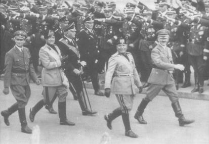

Adolf Hitler ve Benito Mussolini Münih’te, 1937
Hitler’in iktidara gelişi, dünya tarihinin en büyük felaketlerinden biri olmuştur. Fakat Hitler için Versay uluslararası düzenini temsil eden iskambil kâğıtlarından yapılmış evin yıkılışı, sessizce ve bir faciaya yol açmayacak bir tarzda olabilirdi. Almanya’nın bu süreçten, kıta üzerindeki en güçlü devlet olarak ortaya çıkması kaçınılmazdı; ancak isteri nöbeti halindeki öldürme ve yakıp yıkmalar yarı şeytani olan bir insanın eseridir.
Hitler, söz söyleme yeteneği ile yükselmiştir. Diğer devrimci liderlere benzemeyen Hitler, herhangi bir büyük politik düşünce ekolünü temsil etmeyen, yalnız bir politik maceracı idi. Mein Kampf’ında açıkladığı üzere, felsefesi, alelade sıkıcı fikirlerden fantastiğe kadar giden bir yelpazedeydi ve sağ, köktenci ve geleneksel düşünce tarzının popülerleştirilmiş bir yeniden ifadesi niteliğindeydi. Düşünceleri tek başına, Marx’ın Das Kapital’i veya XVIII. yüzyıl filozoflarının eserleri gibi, bir devrim hareketi ile sonuçlanacak entelektüel bir akım başlatacak gibi görünmüyordu.
Demagojik yeteneği Hitler’i Almanya’nın başına getirmiş ve siyasi hayatında da en büyük sermayesi olmuştur. Toplumdan dışlanmış bir kişinin içgüdüleriyle ve psikolojik zayıflıkları hemen fark eden gözüyle, düşmanlarını yenilgiden yenilgiye uğratmıştır. Demokrasilerin Versay Antlaşması için duydukları suçluluğu acımasız bir şekilde kullanmıştır.
Hükümetin başı olarak, Hitler, analizlerden çok içgüdülerine göre hareket etmiştir. Kendisini sanatçı sanan Hitler, bir türlü yerinde duramayan, daima hareket halinde olan bir kişiliğe sahipti. Berlin’i sevmez, sık sık Bavyera’daki köşesine çekilir, aylarca tamir işleri ile uğraşır, ancak kısa zamanda ondan da bıkardı. Düzenli bir çalışma prosedürü sevmediğinden, bakanları ona ulaşmakta zorluk çekerdi. Politika oluşturması düzensizdi. Parlayıp sönen coşkulu karakterine uygun olan işler yürür, üzerinde düşünülmesi, kafa yorulması gereken işler kalırdı.
Demagojinin esası, kişinin duyguyu ve hayal kırıklığını tek bir anda toplama yeteneğinde yatar. Bu anı yakalamak ve yakın çevresi, geniş halk kitleleri ile neredeyse duygusal ve hipnotizmaya benzer yakın ilişki kurmak Hitler’in özelliğiydi. Almanya dışında dünya, onu normal sınırlı hedefler peşinde koşan bir politikacı olarak gördüğü sürece başarılıydı. Büyük dış politika zaferlerinin hepsi, iktidarının ilk beş yılında 1933-38 gerçekleştirilmiş ve kurbanlarının, Hitler’in amacının, Versay sistemi ile prensiplerini uyumlu hale getirmek olduğu inançlarına dayanmıştır.
Hitler, adaletsizliği düzeltmek iddiasını terk edip, gerçek yüzünü gösterince inanılırlığını kaybetti. Kendisi için fetih yapma işine girişince, temasını yitirdi. 1940’ta Fransa’ya karşı harekete girişmek ve 1941’de Moskova önünde geri çekilmeyi reddetmek gibi, ara sıra parlayan sezgileri vardı; ama bu son hareketi kuşkusuz Alman ordusunun çöküşüne neden oldu. Bununla beraber, Hitler’in en önemli deneyimi, Almanya’nın I. Dünya Savaşı’ndaki yenilgisi olmuştur. Askeri bir hastanede, hardal gazı ile yarı kör olmuş vaziyette yatağa bağlı yatarken, Almanya’nın yenilgisini ilk defa nasıl duyduğunu anlatmaktan usanmazdı. Almanya’nın çöküşünü, ihanete, Yahudilerin karşı planına ve irade eksikliğine bağlayan Hitler, Almanya’nın yabancılar tarafından değil, ancak kendisi tarafından yenilebileceği görüşünü bütün hayatı boyunca korumuştur. Bu düşünce biçimi, 1918 yenilgisinin nedenini de ihanet olarak belirledi ve Alman liderlerinin sonuna kadar savaşmaması, Hitler’in tekrarlana tekrarlana zihni uyuşturan monologlarının bitmez tükenmez sermayesi oldu.
Hitler, hiçbir şekilde zaferleri ile tatmin olmayan bir kişiliğe sahipti; sonunda kaçınılmaz çöküntüyü sarsılmaz irade gücü ile önleyebileceği fikrine kendisi de inandı. Psikologlar, savaşı, Almanya’nın bütün kaynaklarını boşu boşuna tüketinceye kadar strateji ve akılcı bir politikadan yoksun olarak yönetmesine ve hemen hemen her tarafı işgal edilmiş ülkenin etrafı sarılmış başkentinde, bir sığınak içinde, hâlâ yenilgiyi kabul etmeyip dünyaya meydan okumaya devam ederek kendisini öldürmesine bir açıklama bulabilirler.
Demagojik yetenek ve bencillik, aynı madalyonunun iki yüzüdür. Hitler’in normal bir diyalog kurması olanaksızdı; ya uzun monologlara girişir veya muhatabı lafı kapmayı başarabilirse, can sıkıcı bir sessizliğe bürünür, hatta zaman zaman uyurdu.{366} Hitler’in, Viyana’nın yeraltı dünyasından, Almanya’nın rakipsiz liderliğine kadarki mucizevi yükselişi, gerçekten de çağdaşlarında olmayan şahsi yeteneklerine dayanır. Böylece Hitler’in iktidara yükselişi hikâyesinin tekrarlanması, müritlerinin kullandıkları isimle Hitler’in “masa başı konuşmalarının insanın beynini uyuşturan bir parçası olmuştur.{367}
Hitler’in kendine hayranlığı öldürücü sonuçlar da doğurmuştur. Kendisini ve daha önemlisi çevresini, eşsiz olan yetenekleri dolayısıyla bütün amaçlarının o hayatta iken gerçekleştirilmesi gerektiğine inandırmıştı. Aile tarihi nedeniyle hayatının çok uzun olmayacağını hesaplayan Hitler, herhangi bir başarısının olgunlaşmasına hiçbir zaman izin vermemiş ve fiziki gücü hakkındaki değerlendirmesine uygun olarak belirlediği takvime göre daima ileriye doğru hareket halinde olmuştur. Tarihte, tıbbi varsayıma dayandırılarak başlatılan başka bir büyük savaş örneği yoktur.
Hitler’in özellikle küçümsediği Stresemann gibi kendinden önceki liderlerin güttüğü politikalar için yaratılan fırsatlardan yararlanarak elde ettiği hayret verici başarılar gittikçe artmaya başladı. Vestfalya Barışı gibi Versay Antlaşması da güçlü bir ülkeyi, doğu sınırında bir grup küçük ve korumasız devletle karşı karşıya bıraktı. Ancak aradaki fark, Vestfalya’da bu durum bile bile yaratılmışken Versay’da bunun tam tersinin doğru olmasıdır. Versay ve Locarno, Almanya için Doğu Avrupa’ya giden yolu düzeltmiştir. Sabırlı Alman liderliği, zamanla barışçı yollarla veya belki de Batı tarafından sağlanan şartlarla orada üstünlüğünü kurabilirdi. Fakat Hitler’in pervasız megalomanisi, barışçıl bir evrimi bir dünya savaşına dönüştürmüştür.
İlk önce, Hitler’in gerçek kişiliği, görünüşteki sıradanlığı ile gözlerden saklanmıştı. Her ne kadar Hitler, bu konudaki niyetlerini sık sık açıklamış ise de, ne Alman, ne de Batı Avrupa kurumları var olan düzeni gerçekten devirmeyi amaçladığına inanmamışlardı. Gittikçe gelişen Nazi Partisi’nin tacizlerinden bıkan, ekonomik bunalım ve politik karışıklık nedeniyle demoralize olan Alman muhafazakâr liderliği, Hitler’i başbakan olarak atadı ve kendini güvence altına almak için de bakanlar kurulunu saygıdeğer muhafazakârlarla doldurdu. (Hitler’in 30 Ocak 1933 tarihinde kurulan ilk kabinesinde sadece üç Nazi Partisi üyesi vardır.) Ancak Hitler, o kadar yolu parlamento manevralarıyla önü kesilsin diye kat etmemişti. Birkaç sert darbe ile (30 Haziran 1934’te yapılan bir temizlik hareketi ile bazı rakiplerini ve muhaliflerini öldürtmüştü) iktidara geldikten on sekiz ay sonra Almanya’nın diktatörü olmuştu.
Batı demokrasilerinin Hitler’in bu çıkışına karşı ilk tepkisi, silahsızlanma yükümlülüklerini hızlandırmak oldu. Şimdi Almanya hükümetinin başında, Versay Antlaşması’nı yıkmak, tekrar silahlanmak ve genişleme politikası izlemek niyetinde olduğunu açıkça ilan eden bir başbakan vardı. Buna rağmen, demokrasiler özel önlemler alma gereksinimi duymadılar. Hitler’in iktidara gelmesi, Büyük Britanya’nın silahsızlanma işindeki kararlılığını kuvvetlendirdi. Hatta bazı İngiliz diplomatlar, Hitler’in kendinden önceki istikrarsız hükümetlere göre barış için daha çok ümit verdiğini düşündüler, İngiliz Büyükelçisi Phipps, Dışişleri Bakanlığı’na “Hitler’in imzası, bütün geçmişinde hiçbir Almanın bağlamadığı kadar Almanya’yı bağlayacaktır.”{368} diye yazıyordu; Ramsay MacDonald’a göre, İngilizlerin Fransa’ya güvence vermesine artık gerek yoktu, çünkü Almanya silahsızlanma anlaşmasını bozarsa “dünyanın Almanya’ya karşı tepkisi çok fazla olacaktı.”{369}
Kuşkusuz, Fransa böyle yatıştırıcı sözlerle tatmin olmamıştı. Başlıca problemi, hâlâ Almanya silahlanmaya ve İngiltere de güvence vermemeye devam ederse, ülkesinin nasıl güven altında olacağıydı. Dünya kamuoyu anlaşmayı bozanlara karşı bu kadar kararlı ise, Büyük Britanya güvence vermekte neden bu kadar isteksizdi? İngiliz Dışişleri Bakam Sir John Simon şöyle cevap veriyordu: “Çünkü İngiliz kamuoyu bunu desteklemez.” Böylece Fransa’nın korkulu rüyası olan bir Alman saldırısı karşısında, İngilizlerin yardıma gelmeyeceği iyice anlaşılmış oldu.{370} Fakat niçin İngiliz kamuoyu Fransa’ya güvence vermeyi desteklemeyecekti? Muhafazakâr Parti’nin Başkanı ve İngiliz hükümetinin gerçek lideri Stanley Baldwin, bu soruya böyle bir saldırının olası olmadığı şeklinde cevap verdi:
“Eğer Almanya’nın yeniden silahlandığı ispatlanırsa, bu durumda, Avrupa’nın karşı karşıya geleceği yeni bir durum ortaya çıkacaktır... Böyle bir durum ortaya çıkarsa, Majesteleri’nin hükümeti sorunu ciddiyetle ele alacaktır; fakat böyle bir durum henüz ortada yoktur...”{371}
Bu argüman, bitmeyen bir döngü ve bitmeyen bir çelişkiler yumağı idi: Güvence, hem riskli, hem de gereksizdi; eşitlik sağlandıktan sonra Almanya tatmin olacaktı. Oysa Almanya henüz tehdit etmekte iken güvence verilmesi durumu, her ne kadar dünya kamuoyunun lanetinin saldırganı daha işin başında durduracağı varsayılsa bile, çok tehlikeli olabilirdi. Sonunda Hitler’in kendisi, kaçamaklara ve ikiyüzlülüğe son verdi. 14 Ekim 1933 tarihinde Almanya, Silahsızlanma Konferansı’nı kesin olarak terk etti. Hitler taleplerinin reddedilmesinden dolayı değil, aksine Almanya’nın eşitlik talebinin kabul edilmesinden ve böylece hiçbir engel tanımadan silahlanmasına engel olunacağından korktuğu için bunu yaptı. Bir hafta sonra da Milletler Cemiyeti’nden çekildi. 1934’ün başında Almanya’nın yeniden silahlanmasını ilan etti. Dünya toplumundan kendisini bu şekilde ayıran Almanya, bu işten herhangi bir görünür zarar da görmedi.
Hitler açıkça meydan okumuştu; ama demokrasiler bunun ne anlama geldiği konusunda bir fikir sahibi değildiler. Hitler, yeniden silahlanmak suretiyle cemiyetin birçok üyesinin esasen prensip olarak kabul ettiği bir şeyi uygulamıyor muydu? Hitler belirgin bir saldırı hareketine girişmeden tepki göstermeye ne gerek vardı? Aslında, ortak güvenlik bu gibi işler için değil miydi? Bu tutumları ile, Batı demokrasilerinin liderleri belirsiz kararlar vermek zorunluluğundan kendilerini kurtarmış oluyorlardı. Hitler’in kötü niyetinin açık bir işaretini görünceye kadar beklemek onlar için daha kolaydı; çünkü bu işaretin yokluğu, güçlü önlemler almak için gerekli kamuoyu desteğinin yokluğu demekti. Yahut demokrasilerin liderleri böyle düşünüyorlardı. Kuşkusuz, Batı demokrasilerinin etkili herhangi bir direnme göstermeleri için artık çok geç olacağı zamana kadar, gerçek niyetini ustaca bütün dünyadan saklamak için Hitler’in her türlü nedeni vardı, iki savaş arasındaki dönemin demokratik devlet adamları, güç dengesinin zayıflamasından çok, savaştan korkuyorlardı. Ramsay MacDonald, “güvenliğin askeri önlemlerle değil, moral araçlarla sağlanması” gerektiğini savunuyordu.
Hitler, zaman zaman olası kurbanlarının hayal kurmalarını sağlayan barış saldırıları yaparak demokrasilerin bu tutumlarını beceri ile kötüye kullanıyordu. Silahsızlanma görüşmelerinden çekildiği zaman, Alman ordusunun 300.000 kişiyle sınırlandırılmasını ve hava kuvvetlerinin Fransa’nın hava kuvvetlerinin yarısı kadar olmasını önermişti. Bu öneri, Almanya’nın Versay’da belirlenen 100.000 kişilik sınırı aştığını dikkatlerden gizledi. Yeni sınıra birkaç yıldan önce erişilemeyeceği izlenimi verildi ki, kuşkusuz bu limit kısa zamanda geçilebilirdi.
Fransa, kendi güvenliğini kendisinin sağlayabileceğini söyleyerek bu öneriyi reddetti. Bu cevabın kibirli tonu, Fransa’nın korkulu rüyası olan Almanya’yla askeri eşitliğin veya daha kötüsünün şimdi gerçek olduğunu saklayamadı. Büyük Britanya, silahsızlanmanın her zamankinden daha çok önem kazandığı sonucuna vardı ve kabine şöyle bir açıklama yaptı: “Politikamız, Milletler Cemiyeti Anasözleşmesi çerçevesindeki dünya silahlanma yarışını sınırlamak ve azaltmaktır. Bunun için tek araç uluslararası işbirliğidir.”{372} Geçekten kabine, kendi tahminlerine göre gittikçe zayıflayan durumdan ne kurtarılabilirse onu kurtarmanın en iyi seçenek olduğu kararına vardı. Hitler, Alman delegasyonuna Silahsızlanma Konferansı’nı terk etme emri verdikten altı hafta sonra, 29 Kasım 1933’te Baldwin kabineye şunları söylüyordu:
“Silahlanmaya bir sınır koyma ümidimiz olmasaydı, yalnızca hava kuvvetlerimiz için değil, donanma için de huzursuzluk duymakta çok haklı olurduk, (İngiltere) Almanya’yı da içine alacak şekilde, bir silahsızlanma planı gerçekleştirmek için her türlü çabayı harcamaktadır.”{373}
Almanya, silahlanmakta ve İngiliz savunmasının durumu da, Bakdwin’in deyimi ile huzursuzluk verici ise, daha büyük İngiliz savunma çabasının gösterilmesi gerekmekteydi. Oysa Baldwin aksi yönü seçti. 1932’de başlatılan uçak üretimini durdurdu. Bu tutum “Majesteleri hükümetinin Silahsızlanma Konferansı’nın sonucunu daha ciddi bir şekilde desteklemek arzusundan”{374} doğmuştu. Baldwin, Büyük Britanya tek taraflı olarak silahsızlanmaya devam ettiği sürece, Hitler’in silahsızlanma görüşmelerine katılmasının nasıl sağlanacağı sorusuna açıklık getirmedi. (Baldwin’in hareketinin başka bir açıklaması, Büyük Britanya’nın yeni uçak modelleri geliştirdiği ve bunlar hazır olana kadar üretim yapılmaması şeklindedir. Bu da, Baldwin’in zorunlu olarak yapması gereken bir işi, bir iyi niyet jesti olarak gösteriyor demektir.)
Fransa’ya gelince, Fransa teselliyi gerçeklerden kaçmakta buldu. Paris’teki İngiliz büyükelçisi, Londra’ya şöyle rapor gönderiyordu: “Fransa son derece dikkatli bir politikaya döndü; herhangi bir askeri macera içeren ve kuvvete dayanan önlemlerin alınmasına karşıdır.”{375} Sonradan Savaş Bakanı olan Eduard Daladier’e gönderilen bir rapor, Fransa’nın bile Cemiyet prensiplerine dayanmaya başladığını göstermektedir. Berlin’deki Fransız Askeri ataşesi, Hitler’den daha tehlikeli olan fanatiklerin partinin kanatlarında gizlendiğine kendisini inandırarak, Hitler’i dizginlemek için en etkili yolun silahsızlanma olduğunu açıkladı:
“Almanya’nın askeri gelişmesini... hiç değilse bir süre engellemek için bir uzlaşmaya varmaktan başka bizim için bir yol yoktur... Hitler barış arzusunu ilan ederken samimi ise, anlaşmaya ulaştığımız için kendimizi kutlayabileceğiz. Başka niyetleri varsa veya bir gün bazı fanatiklere izin vermek zorunda kalırsa, hiç olmazsa savaşın çıkışını bir müddet geciktirmiş olacağız ki, bu da gerçekten bir kazançtır.”{376}
Büyük Britanya ve Fransa, Alman silahlanmasına dokunmamaya karar verdiler, çünkü başka yapacakları bir şey yoktu. Büyük Britanya ortak güvenlikten ve Milletler Cemiyeti’nden vazgeçmeğe henüz hazır değildi. Fransa’nın morali o kadar bozuktu ki, kendini toparlayıp önsezilerine göre hareket etmek gücünden yoksundu. Fransa, tek başına hareket etmeye cesaret edemiyordu ve Büyük Britanya da birlikte hareket etmeyi reddediyordu.
Sonradan geriye bakıldığında, çağdaşlarının, Hitler’in hareket nedenlerini değerlendirmekte ne kadar aptalca hareket ettiklerini söylemek kolaydır. Ama, suçluluğu bir tarafa, Hitler’in ihtirasları bile, daha başlangıçta apaçık ortada değildi, iktidarının ilk iki yılında, yönetimini güçlendirmek başlıca ilgilendiği şeydi. Fakat Hitler’in dış politikadaki haşinliği, sert anti-komünizmi ve Alman ekonomisini yeniden canlandırması düşünülürse, birçok İngiliz ve Fransız liderinin gözünde fazlasıyla dengeleniyordu.
Devlet adamlarının her zaman karşı karşıya bulunduğu çıkmaz, hareket alanlarının en fazla olduğu zaman, bilgilerinin en az seviyede olmasıdır. Yeteri kadar bilgi topladıkları zaman ise, belirleyici bir eylem için fırsat kaçırılmış olur. 1930’larda İngiliz liderler, Hitler’in hedeflerinin ne olduğu konusunda kesin bilgiye sahip değillerdi. Fransız liderler ise, kanıtlayamadıkları değerlendirmelere dayanarak harekete geçmek konusunda kendilerine güvenemiyorlardı. Hitler’in kişiliği hakkında bilgi sahibi olmak için ödenmesi gereken ders ücreti, Avrupa’nın bir ucundan diğer ucuna kadar uzanan mezarlar oldu. Diğer taraftan, demokrasiler yönetiminin ilk yıllarında Hitler’e karşı bütün kozlarını oynamış olsalardı, bu kez tarihçiler, Hitler’in anlaşılmayan bir milliyetçi mi, yoksa dünya hegemonyasını amaç edinmiş bir manyak mı olduğu hususunu tartışıyor olacaklardı.
Batı’nın, Hitler’in niyetleri hakkındaki takıntısı, daha baştan yanlış yönlendirilmişti. Güç dengesi ilkeleri, doğuda küçük ve zayıf devletlere komşu olan büyük ve güçlü bir Almanya’nın tehlikeli bir tehdit oluşturacağını açıkça göstermeliydi. Real-politik bize şunu öğretir ki, Hitler’in niyetleri ne olursa olsun, Almanya’nın komşuları ile ilişkileri onların karşılıklı güçlerine göre belirlenecektir. Batı, Hitler’in niyetlerini değerlendirmeye zaman harcayacağına, Almanya’nın gittikçe büyüyen gücüne karşı denge oluşturmaya çaba harcamalıydı.
Kimse, Batılı Müttefikler’in Hitler’le hesaplaşma konusunda tereddüt etmelerinin sonucunu, Hitler’in şeytani propaganda şefi Joseph Goebbels’den daha iyi anlatamaz. Goebbels, Nisan 1940’ta Nazilerin Norveç’i işgal etmesinin arifesinde gizli bir brifingde şöyle diyordu:
“Şimdiye kadar, Almanya’nın gerçek hedeflerinin ne olduğu hususunda düşmanlarımızı karanlıkta bırakmayı başardık. 1932’den önce, iç düşmanlarımız da, nereye gittiğimizi veya hukuka bağlılık yeminimizin sadece bir aldatmaca olduğunu anlayamadılar... Bize engel olabilirlerdi. 1925’te birkaçımızı tutuklayabilirlerdi ve bu işin sonu olurdu. Hayır, onlar bizim tehlikeli bölgeye girmemize izin verdiler. Dış politikada da aynen böyle oldu... 1933’te bir Fransız başbakanı şunu söylemeli idi (yahut ben Fransız başbakanı olsam söylerdim): “Yeni Reich Başbakanı, Mein Kampf’ı yazan adamdır. Kitabında şöyle söylüyor. Bu adamın yakınımızda bulunmasına hoşgörü ile bakılamaz. Ya o ortadan kaybolmak veya biz yürümeliyiz!” Fakat bunu yapmadılar. Bizi kendi başımıza bıraktılar; tehlikeli bölgeye girmemize izin verdiler ve biz bütün o tehlikeli kayalıklardan sıyrılmayı başardık. Biz işimizi bitirip onlardan daha iyi silahlandıktan sonra, bize savaş açtılar! [italikler orijinaldir.]”{377}
Demokrasilerin liderleri, bir kez Almanya belirli bir silahlanma seviyesine eriştikten sonra, Hitler’in niyetinin şu veya bu olmasının hiçbir önemi olmadığını kabul etmeyi reddettiler. Engel olunmadıkça veya dengelenmedikçe, Alman askeri kuvvetinin hızlı büyümesinin, var olan dengeyi altüst edeceği açıktı.
Gerçekten de, Churchill’in bir tek mesajı vardı. Fakat 1930’larda, peygamberleri önceden tanıyabilmek için henüz vakit çok erkendi. İngiliz liderler, bütün politik yelpazeyi kapsayan bir oybirliği ile ki, bu çok seyrek görülen bir şeydi, Churchill’in uyarılarını reddettiler. Hazırlıklı olmak değil de, silahsızlanmanın barışın anahtarı olduğu varsayımından hareket ederek, Hitler’i stratejik bir tehlike değil, psikolojik bir sorun olarak kabul ettiler.
1934’te Churchill, Almanya’nın silahlanmasına karşı Büyük Britanya’nın, Kraliyet Hava Kuvvetleri’nin güçlendirilmesiyle cevap vermesini ısrarla istediği zaman, hükümet ve muhalefet liderleri bu öneriyi alaya almakta birleştiler. Liberal Parti adına konuşan Herbert Samuel şunu söyledi: “Göründüğü kadarıyla, bize mantıklı ve sağlıklı bir tavsiyede bulunmuyor... pervasız bir briç oyununda gibi... görünüyor... Bütün bu formüller tehlikelidir.”{378} Sir Stafford Cripps ise, İşçi Partisi’nin görüşünü kibirli ve alaycı bir şekilde şöyle belirtti:
“İnsan onu, ülkesinin baronluklarında silahsızlanma olasılığı düşüncesine gülen ve kendisinin ve feodal halkının ve ineklerinin güvenliğini sağlamak için tek yolu, mümkün olduğu kadar çok silahlanma olarak gösteren bir Ortaçağ baronu olarak canlandırabiliyor.”{379}
Muhafazakâr Başbakan Baldwin, “bazı tür silahların sınırlandırılması veya kısıtlanması hususundaki ümidini henüz yitirmediğini” söyleyerek Churchill’in önerisinin Avam Kamarası’nda reddini sağladı. Baldwin’e göre, Alman hava kuvvetlerinin gücü hakkında doğru ve kesin bilgi almak “olağanüstü zor” idi; ama bunun niçin böyle olduğunu açıklamadı.{380} Bununla beraber, Baldwin “Almanya’nın hızla İngiltere ile eşitliğe doğru yaklaştığının doğru olmadığına” emindi. “Bu anda gereksiz telaşa ve paniğe sebep yoktur”{381} dedi. Churchill’in rakamlarının “abartılmış” olduğunu söyleyerek “şu anda bizim ve Avrupa’da herhangi bir ülkenin karşı karşıya bulunduğu yakın bir tehlike veya acil durum yoktur”{382} diye vurguladı.
Fransa, 1920’lerde Çekoslovakya, Polonya ve Romanya’ya verdiği tek taraflı güvenceleri ortak savunma anlaşmalarına dönüştürmek suretiyle gönülsüz yapılan ittifaklar topluluğunun arkasına sığınmayı yeğledi. Bu, Almanya doğuya dönmeden önce Fransa ile sorunlarını çözmek yolunu seçerse bile, şimdi bu ülkelerin Fransa’nın yardımına koşmak yükümlülüğü altında bulundukları anlamına geliyordu.
Bu boş ve gerçekten dokunaklı bir jestti. Anlaşmalar, Fransa’nın yeni ve zayıf Doğu Avrupa ülkelerine güvence vermesi bakımından mantıklıydı. Fakat Almanya’yı, iki cepheli savaş riski ile karşı karşıya getirecek karşılıklı yardımlaşma olarak pek uygun değildi. Bu devletler, doğuda Almanya’yı dizginleyemeyecek kadar zayıftılar; Fransa’yı kurtarmak için Almanya’ya saldırı hareketi yapmaları söz konusu olamazdı. Bu paktları daha da zayıflatan bir şekilde, Polonya, Almanya ile bir saldırmazlık anlaşması yaparak Fransa’ya karşı yükümlülüklerini dengeledi; öyle ki, Fransa’ya saldırılması halinde Polonya’nın resmi taahhütleri birbirini iptal edecek, daha doğrusu kriz anında Polonya kendisine en fazla avantaj sağlayacak yolu seçmekte serbest olacaktı.
1935’te imzalanan yeni Fransız-Sovyet anlaşması, Fransa’nın psikolojik ve politik moral çöküntüsünün ne kadar büyük olduğunu gösterdi. I. Dünya Savaşı’ndan önce, Fransa, Rusya ile politik bir ittifak yapmaya çok istekli olmuş ve bu politik uzlaşmayı askeri bir pakta dönüştürünceye kadar da rahat etmemişti. Fransa’nın konumu, 1935’te stratejik bakımdan daha da zayıftı ve Sovyet askeri desteğine olan gereksinimi hemen hemen ümitsizdi. Oysa Fransa, Sovyetler Birliği ile kerhen politik ittifak yaparken, kurmay subayların görüşmelerini sert bir şekilde reddetmişti. 1937’ye kadar geç bir tarihte, Fransa yıllık askeri manevralarında Sovyet gözlemcilerinin bulunmasına izin vermemiştir. Fransız liderlerinin bu davranış tarzının, Stalin’in başlangıçtan beri var olan Batı demokrasilerine güvensizliğini daha da büyüten üç nedeni vardı: Birincisi, Sovyetler Birliği ile çok yakın bir ilişkinin Fransa’nın Büyük Britanya ile olan vazgeçilmez bağlarını zayıflatacağı korkusu idi. İkincisi, Fransa’nın Sovyetler Birliği ile Almanya arasında bulunan Doğu Avrupalı müttefiklerinin, Sovyet birliklerinin topraklarına girmelerine izin vermeye hazır olmamalarıydı. Bu durum, Fransız-Sovyet askeri görüşmeleri için anlamlı bir konu bulmayı da çok güçleştiriyordu. Son olarak, 1938’de bile, Almanya, Fransız liderlerinin gözünü o kadar korkutmuştu ki, Sovyetler Birliği ile askeri görüşmelerin, Başbakan Chautemps’ın kelimeleri ile “Almanya’nın savaş ilanına neden olacağı”ndan{383} endişe ediyorlardı.
Sonuçta Fransa, kendisine yardım edemeyecek kadar zayıf ülkelerle askeri ittifaklar, askeri işbirliği yapmağa cesaret edemediği Sovyetler Birliği ile politik bir ittifak ve kendisi ile askeri yükümlülük içeren bir ittifak yapmayı düşünmediğini açıkça söyleyen Büyük Britanya’ya stratejik bağımlılıkla işi noktaladı. Bütün bu düzenlemeler, büyük bir stratejiye değil, sinirsel çöküntüye doğru gidecek düzenlemelerdi. Fransa’nın artan Alman gücüne karşı tek ciddi hareketi, İtalya yönünde olmuştur. Mussolini’nin kendisini ortak güvenliğe adamış bir kimse olmadığı bir gerçekti; fakat özellikle Almanya söz konusu olduğu zaman, İtalya’nın olanaklarının sınırları hakkında çok gerçekçi görüşleri vardı. Almanya’nın Avusturya’yı topraklarına katması halinde, bu durumun etnik bakımdan Alman olan Güney Tirol’ün geri verilmesine gidebileceğinden korkuyordu. Ocak 1935’te, o zamanki Dışişleri Bakanı Pierre Laval, askeri bir ittifaka çok yaklaşan bir ittifak yaptı. Avusturya’nın bağımsızlığına bir tehdit oluştuğunda, İtalya ve Fransa’nın birbirlerine danışacaklarını kabul ettiler ve askeri kurmayların görüşmelerinde, Ren bölgesine İtalyan birliklerinin ve Avusturya sınırlarına da Fransız birliklerinin yerleştirilmesini tartışacak kadar işi büyüttüler.
Üç ay sonra Hitler’in zorunlu askere alma ilanından sonra, Büyük Britanya, Fransa ve İtalya arasında bir ittifak gelişmek üzereydi. Hükümet başkanları, İtalyan tatil kasabası Stresa’da toplanarak Almanya’nın, Versay Antlaşması’nı kuvvet kullanarak değiştirmeye girişmesi halinde, ona karşı direnme konusunda görüş birliğine vardılar, işin tarih bakımdan hayret edilecek tarafı, uzun zamandan beri Versay Antlaşması’nı İtalya’ya haksızlık yapıldığı gerekçesi ile eleştiren Mussolini’nin, bu anlaşmayı savunan bir konferansa ev sahipliği yapmasıydı.
Stresa, I. Dünya Savaşı’nın galiplerinin ortak bir hareket için bir araya geldiği son olay olacaktı. Konferanstan iki ay sonra, Büyük Britanya Almanya’yla deniz kuvvetleri anlaşması yaptı. Bu da gösteriyordu ki, kendi güvenliği söz konusu olduğunda Büyük Britanya, Stresa’daki ortaklarına değil, düşmanı ile yapacağı iki-taraflı uzlaşmaya dayanmayı yeğliyordu. Almanya, gelecek on yıl içinde donanmasını Büyük Britanya’nın donanmasının yüzde otuz beşi düzeyinde tutmayı kabul ediyordu; denizaltılarının sayısı ise, eşit olabilirdi.
Deniz Kuvvetleri Antlaşması, şartlarından çok, demokrasilerin içinde bulundukları ruh halini ortaya koyması bakımından önemliydi. Kuşkusuz İngiliz Kabinesi, Deniz Kuvvetleri Antlaşması’nın, Versay Antlaşması’nın deniz kuvvetleri ile ilgili hükümlerinin Almanya tarafından ortadan kaldırılması anlamına geldiğinin farkındaydı; dolayısıyla anlaşma en azından Stresa cephesinin ruhuna karşıt idi. Anlaşmanın pratik sonucu, ikili temeller üzerine yeni tavanlar belirlemesiydi ve bu tavan, Almanya’nın inşa kapasitesinin üst sınırındaydı. Bu yöntem, Soğuk Savaş zamanında gittikçe popüler olan bir silahların kontrolü yöntemidir. Ayrıca Deniz Kuvvetleri Antlaşması, Büyük Britanya’nın Stresa cephesindeki ortaklarına güvenmekten çok, düşmanı ile uzlaşma yolunu yeğlediğini gösteriyordu ve bu da sonradan yatıştırma politikası olarak tanınacak politikanın psikolojik çerçevesiydi.
Bu gelişmelerin hemen sonrasında, Stresa cephesi toptan çöktü. Realpolitik’in bir taraftarı olan Mussolini, I. Dünya Savaşı’ndan evvel rutin bir iş olan sömürgeci genişleme için kendisini serbest hissetti. Bunun sonucunda, 1935’de Afrika’nın son bağımsız devleti Habeşistan’ı işgal ederek kendisine Afrika’da bir imparatorluk kurma işine koyuldu. Bu süreç içinde, yüzyılın başında Habeş güçleri tarafından İtalya’nın aşağılanmasının öcünü de almış olacaktı.
Ancak Mussolini’nin saldırısı I. Dünya Savaşı’ndan önce kabul edilmişti; ama şimdi ortak güvenlik ve Milletler Cemiyeti’ne yönelen bir dünyada yapılıyordu. Özellikle Büyük Britanya’da, kamuoyu Japonya’nın Maçurya’yı işgaline engel olmayı “başaramadığı” için Milletler Cemiyeti’ni kınıyordu. Bu iki olay arasındaki süre içinde ekonomik yaptırım mekanizması yürürlüğe konmuştu, İtalya 1935’te Habeşistan’ı işgal ettiği zaman, cemiyetin böyle saldırılara karşı resmi bir önlemi vardı. Bundan başka, Habeşistan, şartların garip şekilde ters dönmesi sonucunda da olsa, cemiyetin üyesi bir ülkeydi. 1925’te, İtalya, İngilizlerin var olduğunu sandığı niyetlerine engel olmak için Habeşistan’ın Milletler Cemiyeti’ne alınmasını desteklemişti. Büyük Britanya, Habeşistan’ın uluslararası toplumun tam üyesi olamayacak kadar barbar olduğunu ileri sürmekle beraber, istemeye istemeye razı olmuştu.
Şimdi iki ülke de kendi kazdıkları kuyuya düşmüşlerdi: İtalya, ortada hiçbir tahrik yokken bir cemiyet üyesine karşı saldırıda bulunmuştu; Büyük Britanya ise başka bir Afrika sömürgecilik problemi ile değil, ortak güvenlik sistemine bir meydan okuma ile karşı karşıya idi. Durumu daha da güçleştiren şey, Büyük Britanya ve Fransa’nın Stresa’da Habeşistan’ın İtalya’nın çıkar alanı içinde olduğunu kabul etmiş olmaları idi. Laval sonradan, İtalya’nın Habeşistan’da, Fransa’nın Fas’ta oynadığına benzer bir rol almasını düşündüğünü söylemişti, yani dolaylı kontrol şekli söz konusu idi. Fakat Mussolini’nin Habeşistan’ı topraklarına katma ile dolaylı kontrol arasındaki fark yüzünden, bu kadar ödün vermiş olan Fransa ve Büyük Britanya’nın Almanya’ya karşı oluşmakta olan ittifakı feda edeceklerini anlamaları beklenemezdi.
Fransa ve Büyük Britanya, hiçbir zaman iki eşit derecede tehlikeli seçenekle karşı karşıya olduklarını gerçekten anlamadılar. Eğer İtalya’nın, Avusturya’yı korumak için gerekli ve dolaylı olarak Locarno’da güvence altına alınan silahtan arındırılmış Ren bölgesinin devamına yardımcı olduğu sonucuna varmış olsalardı, Afrika’da İtalya’nın durumunu kurtarabilecek bazı ödünlerle ortaya çıkabilecek ve Stresa’yı da zedelenmemiş tutabileceklerdi. Diğer taraftan, eğer Milletler Cemiyeti, Almanya’yı dizginlemek ve Batı kamuoyunu saldırıya karşı bir araya getirmek için gerekli ve en iyi araç ise, saldırının bir şey kazandırmayacağını göstermek için yaptırımlarda ısrar etmek gerekirdi. Bir orta yol yoktu.
Ancak artık tercihlerini belirleyecek kadar kendilerine güvenleri olmayan demokrasiler, orta bir yol bulmak peşinde idiler. İngilizlerin öncülüğünde, cemiyetin ekonomik yaptırım mekanizması harekete geçirildi. Aynı zamanda Laval, gizlice, İtalya’nın petrole ulaşmasının engellenmeyeceği hususunda Mussolini’ye güvence verdi. Büyük Britanya, Roma’ya, nazik bir şekilde petrol yaptırımlarının savaşa sebep olup olmayacağını sordu. Mussolini, beklenildiği gibi ve yanlış olarak olumlu cevap verince, İngiliz Kabinesi yaygın savaş korkusunu kullanarak cemiyette destek sağlamak çabası için gerekli olan mazereti bulmuş oldu. Bu politika “savaş hariç bütün yaptırımlar” sloganı ile ifadesini buldu.
Sonradan, Başbakan Stanley Baldwin işe yaraması mümkün olan her yaptırımın savaşa da yol açabileceğini söyleyecekti. Böylece, saldırıya karşı direnmede ekonomik yaptırımların, güç kullanmaya alternatif olduğu kabul edildi. Bu görüş, Amerika’da elli yıl sonra Irak’ın Kuveyt’i topraklarına katması dolayısıyla da tekrarlandı, fakat mutlu sonla bitti.
Dışişleri Bakanı Samuel Hoare, Büyük Britanya’nın stratejisinin yolundan sapmış olduğunu anlamıştı. Yakın Alman tehdidine karşı direnmek için, Büyük Britanya liderlerinin, Hitler’le hesaplaşmaları ve Mussolini ile uzlaşmaları gerekliydi. Bunun tamamen aksini yaptılar: Almanya’yı yatıştırdılar ve İtalya ile çatıştılar, işlerin acayipliğini fark eden Hoare ve Laval, 1935 Aralığında bir uzlaşma planladılar: İtalya, Habeşistan’ın verimli ovalarını alacak; Haile Selasiye krallığının tarihi mekânı olan dağlık bölgede egemenliğini sürdürecekti. Büyük Britanya, denize çıkışı olmayan Habeşistan’a İngiliz Somali’sinden bir çıkış vermek suretiyle bu uzlaşmaya katkıda bulunacaktı. Mussolini’nin bu planı kabul etmesi bekleniyordu. Hoare da planı cemiyetin onayına sunacaktı.
Hoare-Laval planı boşa çıktı; çünkü Milletler Cemiyeti’ne sunulmadan önce basına sızdırılmıştı ve o günlerde bu gibi şeyler çok seyrek görülürdü. Çıkan gürültü, Hoare’u istifa etmek zorunda bıraktı. Kamuoyunun şiddetli tepkisi karşısında, pratik bir uzlaşma arayan bir kişi böylece kurban verilmiş oldu. Yerine geçen Anthony Eden, hızla ortak güvenlik sistemi kozasına ve ekonomik yaptırımlara döndü. Ancak kuvvete başvurma konusunda isteksizdi.
Birbirini izleyen krizlerde tekrarlandığı gibi, demokrasiler, düşmanın askeri gücünü olduğundan çok tahmin ederek, kuvvet kullanmaktan kaçınmalarını haklı göstermeye çalıştılar. Londra, Fransa’nın yardımı olmadan İtalyan donanmasını kontrol edemeyeceğine kendisini inandırdı. Fransa, gönülsüz olarak donanmasını Akdeniz’e gönderdi ve böylece, Locamo garantörü ve Stresa ortağı olarak İtalya ile ilişkilerini tehlikeye atmış oldu. Bu karşı konulmaz güç birikimine karşın, petrol yaptırımı hiçbir zaman konmadı. Alışılmış yaptırımlar da Habeşistan’ın yenilgisini önleyecek kadar hızlı çalışmadı, gerçekten çalışıp çalışmayacağı da ayrıca şüpheli idi.
İtalya’nın Habeşistan’ı işgali 1936 Mayısında tamamlandı ve Mussolini, İtalya Kralı Victor Emmanuel’i yeni verilen unvanıyla Etiyopya İmparatoru ilan etti. İki aydan daha az bir zaman sonra, 30 Haziran’da Milletler Cemiyeti Konseyi bu fait accompli’yi (oldubittiyi) görüşmek için toplandı. Haile Selassie, ümitsiz kişisel başvurusunda ortak güvenliğin ölüm çanını herkese duyuruyordu:
“Bu, yalnızca İtalyan saldırısı sorununun çözülmesinden ibaret bir sorun değildir. Bu, bir ortak güvenlik sorunudur; Cemiyet’in var oluş sorunudur; devletlerin uluslararası anlaşmalara güvenmeleri sorunudur; küçük devletlere verilen toprak bütünlüklerine ve bağımsızlıklarına saygı gösterileceği ve güvence altına alınacağı sözünün değeri sorunudur. Bu, devletlerin eşitliği prensibi ile küçük devletlere kölelik zincirleri vurma arasında bir tercih yapılması sorunudur.”{384}
15 Temmuz’da cemiyet, İtalya’ya karşı bütün yaptırımları kaldırdı, iki yıl sonra Münih’in hemen ardından, Büyük Britanya ve Fransa, Almanya korkusunu moral itirazların önüne geçirerek Habeşistan’ın işgalini tanıdılar. Ortak güvenlik sistemi, Haile Selassie’yi, Hoare-Laval’ın Realpolitik planına göre yarışını kaybedeceği ülkesinin tümünü kaybetmeye mahkûm etmişti.
Askeri güç bakımından İtalya, Büyük Britanya, Fransa ve Almanya’yla karşılaştırılamayacak kadar küçüktü. Fakat Sovyetler Birliği’nin kendisini uzakta tutmasının yarattığı boşluk, İtalya’yı, Avusturya’nın ve bir dereceye kadar askerden arındırılmış Ren bölgesinin bağımsızlığını korumak için faydalı bir yardımcı pozisyonuna soktu. Büyük Britanya ve Fransa, Avrupa’nın en güçlü devletleri olarak görüldükleri sürece, Mussolini özellikle Almanya’ya karşı derin bir güvensizlik duydu ve önceleri Hitler’in kişiliğinden hiç hoşlanmadığından Versay düzenlemesini destekledi. Fiili güç ilişkilerinin analizi ile birleşen Etiyopya yüzünden duyduğu kızgınlık, Mussolini’yi, Stresa cephesi üstünde ısrar edildiği takdirde, Alman saldırganlığının bütün hışmını İtalya’nın karşılamak zorunda kalacağına inandırdı. Bu nedenle, Etiyopya, İtalya’nın karşı konulmaz bir şekilde Almanya’ya yaklaşmasının başlangıcını oluşturmuştur; korku ve yeni çıkarlar isteği, bu hareketi eşit şekilde etkileyen iki neden olmuştur.
Ancak Almanya üzerinde en devamlı etki bırakan, Etiyopya fiyaskosu olmuştur. Berlin’deki İngiliz büyükelçisi şöyle yazıyor: “İtalyan zaferi yeni bir dönem açtı. Kuvvete tapılan bir ülkede, İngiliz prestijinin yok olması kaçınılmazdır.”{385} İtalya, Stresa cephesinden çıktıktan sonra, Almanya’nın Avusturya’ya ve Orta Avrupa’ya giden yolda karşısına çıkacak tek engel, askerden arındırılmış Ren bölgesi ile sağlanmış olan açık kapıydı. Hitler, bu kapıyı da kapatmak için hiç zaman kaybetmedi.
7 Mart 1936 pazar sabahı, Hitler ordusuna Versay Antlaşması’nın geride kalan son önlemi olan askerden arındırılmış Ren bölgesine girme emri verdi. Versay’a göre, Alman askeri kuvvetlerinin Ren bölgesine ve onun doğusundaki elli kilometrelik toprak şeridine girmesi yasaktı. Almanya bu hükmü Locarno’da doğrulamıştı; Milletler Cemiyeti Locarno’yu onaylamıştı ve Büyük Britanya, Fransa, Belçika ve İtalya Locarno’ya güvence vermişti.
Hitler Ren bölgesine egemen olursa, Doğu Avrupa da onun insafına kalmış demekti. Doğu Avrupa’nın yeni devletlerinin hiçbirinin tek başına veya diğer devletlerle birlikte revizyonist Almanya’ya karşı kendisini savunma şansı yoktu. Tek ümitleri, Fransa’nın Ren bölgesine yürüme tehdidinde bulunarak Alman saldırganlığını caydırmasıydı.
Batı demokrasileri, bir kez daha Hitler’in niyetleri hakkında emin değillerdi. Teknik gözle bakılırsa, Almanya yalnızca Alman topraklarını yeniden işgal ediyordu. Aynı anda da Fransa’ya bir saldırmazlık antlaşması dâhil her çeşit güvenceyi vermeyi öneriyordu. Almanya’ya, diğer Avrupa devletlerinin öz hakları olarak kabul ettikleri kendi sınırlarını savunma hakkı tanınırsa, bu ülkenin tatmin olacağı bir kez daha ileri sürüldü, İngiliz ve Fransız liderleri, bu kadar açık ve haksız bir ayırımcı işlemi korumak için kendi halklarının hayatlarını riske atma hakkına sahip miydi? Diğer taraftan, Almanya tam silahlanmamışken Hitler’le hesaplaşmak ve böylece sayısız hayatı kurtarmak moral görevleri değil miydi?
Tarih bu sorulara cevap verdi. Ancak çağdaşları şüphe içinde kıvranıyorlardı. 1936’da Hitler, psikolojik sezgi ve şeytani irade gücünün birleşiminden yararlanmaya hâlâ devam ediyordu. Demokrasiler, hâlâ Avrupa’da ülkesini eşit bir pozisyona getirme çabası içinde olan ve biraz aşırı olmakla beraber, normal bir milliyetçi liderle karşı karşıya olduklarını sanıyorlardı. Büyük Britanya ve Fransa, Hitler’in aklından geçenleri okumaya çalışıyordu. Samimi miydi? Gerçekten barış istiyor muydu? Bunlar kesinlikle geçerli sorulardı; fakat dış politika, fiili güç karşılaştırmasına bakılmaksızın yönetilirse ve karşı tarafın niyetlerini kehanetle tahmin etmeye dayanırsa, bataklık üzerine inşa edilmiş gibi olur.
Düşmanlarının zayıflığını kötüye kullanma konusunda olağanüstü yeteneği olan Hitler, Ren bölgesini tekrar işgal etmek için en uygun zamanı seçti, İtalya’ya uygulanacak yaptırımlar konusunda bataklığa gömülmüş olan Milletler Cemiyeti, başka bir büyük devletle çatışacak durumda değildi. Habeşistan savaşı, Locamo’nun garantörlerinden biri olan İtalya ile Batılı devletler arasında bir ayrılık yaratmıştı. Egemen olduğu denizlerde İtalya’ya petrol ambargosu uygulamaktan geri duran diğer garantör Büyük Britanya, ulusal sınırları ihlal etmeyen bir dava için kara savaşını göze almayacak kadar soruna ilgisizdi.
Hiçbir ülkenin, Ren bölgesinin askerden arındırılmış statüsünde Fransa kadar çıkarı olmadığı halde, hiçbirisi Almanya’nın ihlaline kaşı direnmek konusunda onun kadar kararsız değildi. Majino Hattı, Fransa’nın stratejik savunma takıntısını ortaya koyuyordu; askeri donatımı ve Fransız ordusunun eğitimi de Birinci Dünya Savaşı’nın, Fransızlardaki geleneksel saldırı ruhunu öldürmüş olduğu konusunda hiçbir şüphe bırakmıyordu. Fransa, Majino Hattı’nın gerisinde kaderini beklemeye razı ve sınırlarının ötesinde başka hiçbir risk almayı göze almayacak gibi görünüyordu; ne Doğu Avrupa, ne de o anda Ren bölgesi için risk alamazdı.
Yine de Ren bölgesinin yeniden işgali, Hitler için cüretli bir kumardı. Zorunlu askerlik, bir yıldan daha az bir zamandan beri yürürlükteydi. Alman ordusu savaşa hazır olmaktan henüz çok uzaktı. Gerçekten de askerden arındırılmış bölgeye giren küçük Alman öncü birliğine, Fransız direnişi ile karşılaşıldığında, çarpışarak geri çekilme emri verilmişti. Ancak Hitler, askeri gücünün yokluğunu, bol psikolojik cesaretle kapatmayı başardı. Demokrasileri, Ren bölgesindeki asker sayısına sınır koyma ve Almanya’yı tekrar Milletler Cemiyeti’ne sokma isteğini üstü kapalı surette belirten sayısız önerilerle boğdu. Hareketinin, 1935 Fransız-Sovyet Paktı’na bir cevap oluşturduğunu söyleyerek, Sovyetler Birliği’ne karşı duyulan yaygın güvensizliği kullandı. Alman sınırının her iki tarafında elli kilometrelik askerden arındırılmış bölgeler oluşturulmasını ve yirmi beş yıllık saldırmazlık antlaşması imzalanmasını önerdi. Askerden arındırılmış bölge önerisinin iki özelliği vardı: Devamlı barışın bir kalem darbesi uzakta olduğunu ima ediyordu ve Alman sınırına dayanan Majino Hattı’nı da ortadan kaldırıyordu.
Hitler’in görüştüğü kişilerin de, pasif bir tutum izlemek için çok fazla cesaretlendirilmeye gereksinmeleri yoktu. Şurada burada uygun bir kendisini savunma dışında, hiçbir şey yapmıyorlardı. Locarno’dan beri, Fransız politikasının en önemli prensibi, Almanya silahsızlandırılmış olarak kaldığı sürece, İngiliz yardımı teknik bakımdan gereksiz olsa bile, Büyük Britanya ile bir ittifak yapılmadan Almanya ile savaşı göze almamaktı. Fransız liderleri, bu amacın peşinde koşarken sayısız hayal kırıklığına uğradılar ve içlerinden kötü maksatlı olduklarını bildikleri birçok silahsızlanma girişimine destek verdiler.
Fransa’nın karşı konulmaz bir şekilde Büyük Britanya’ya bağımlı olması, niçin hiçbir askeri hazırlık yapmadığını da açıklamaktadır. Berlin’deki Fransız Büyükelçisi André François-Poncet, 21 Kasım 1935’te, yani işgalden lam üç buçuk ay önce, Almanya’nın Ren bölgesini yeniden işgalinin kaçınılmaz olduğu uyarısında bulunduğu zaman bile, Fransa bir hazırlık yapmadı.{386} Fransa ne seferberliğe, ne de gerçekle korktuğu şeyi teşvik ediyor diye suçlanmamak için önleyici askeri tedbirler almaya cesaret edebildi. Bu konuyu Almanya ile görüşmelerde de ortaya atmadı; çünkü Almanya, Fransa’nın uyarılarına aldırmaz veya niyetlerini açıkça söylerse ne yapacağını bilemiyordu.
Fransa’nın 1935’teki anlaşılmaz tutumu, François-Poncet’nin uyarısından sonra bile Fransız genelkurmayının niçin kendi iç planlamasında hiçbir hazırlık yapmamasıdır. Fransız genelkurmayı kendi diplomatlarına mı inanmıyordu? Bunun nedeni, Fransa’nın askerden arındırılmış Ren bölgesinin yarattığı hayati tampon bölge için bile tahkimatının güvenliğini terk etmeyi kabul edememesi miydi? Yoksa artık Fransa kendisini, kendi eylemleriyle böyle bir değişimi yaratamasa bile, kendi lehine önceden öngörülemeyen bir değişiklik gerçekleşene kadar savaşı ertelemenin tek amacı haline gelecek kadar çaresiz mi hissediyordu?
Bu ruh halinin en üst derecedeki sembolü, Fransa’nın on yılda büyük masraflarla inşa ettiği Majino Hattı’ydı. Yani Fransa, Polonya ve Çekoslovakya’ya güvence verdiği aynı yıl, kendisini stratejik savunmaya mahkûm etmişti. Anlaşılmayan başka bir husus da, Fransa’nın Birinci Dünya Savaşı’nın bütün deneyimlerini inkâr edercesine, Belçika sınırında Majino Hattı’nın inşasını durdurmaya karar vermesi idi. Çünkü bir Fransız-Alman savaşı gerçekten olası ise, Alman saldırısı niçin Belçika üzerinden olmasındı? Eğer Fransa, savunma hallinin bu ülkeyi dışarıda bıraktığını açıkladığı takdirde, Belçika’nın çökeceğinden korkuyorsa, Belçika’ya, Majino Hattı’nın Belçika-Almanya sınırı boyunca uzatılmasını kabul etme şansı verebilirdi ve bu reddedilirse, Majino Hattı, Fransa-Belçika sınırı boyunca denize kadar uzatılabilirdi. Fransa ikisini de yapmadı.
Politik liderler bir şeye karar verdikleri zaman, haber alma servisleri bu kararın haklılığını kanıtlamaya çalışırlar. Popüler kitaplar ve filmler genellikle bunun aksini anlatır, yani politika yapanları haber alma uzmanlarının elinde oyuncak gibi gösterirler. Gerçek dünyada, haber alma değerlendirmeleri politik kararları yönlendirmekten çok, bu kararları uygularlar. Bu durum, Fransız askeri tahminlerini bozma etkisi gösteren Alman gücünün aşırı abartılmasını da açıklamaktadır. Almanya Ren bölgesini yeniden işgal ettiği zaman, Fransız Genelkurmay Başkanı General Maurice Gamelin, sivil liderlere Almanya’nın eğitilmiş askeri insan gücünün Fransa’nınkine eşit olduğunu ve Fransa’nınkinden daha çok teçhizata sahip olduğunu söylemiştir. Alman silahlanmasının henüz ikinci yılında bu saçma bir tahmindi. Politik öneriler, Alman askeri gücünün bu hatalı tahmininden doğdu. Gamelin, Fransa’nın genel bir seferberlik kararı vermeden önce herhangi bir askeri karşı harekâta girişmemesini önerdi ki, Fransız liderleri İngiltere’nin desteğini sağlamadan, seferberlik ilanı gibi bir girişimde bulunmayı göze alamıyorlardı ve bu, Ren bölgesine giren Alman birliklerinin sayısı 20.000 ve seferberlik ilan etmeden önce bile Fransa’nın var olan hazır kuvvetlerinin sayısı 500.000 olduğu halde böyleydi.
Şimdi her şey, yine demokrasilere yirmi yıl boyunca ıstırap veren aynı çıkmaza gelip dayanmıştı. Büyük Britanya, Avrupa güç dengesine karşı yalnızca bir tehdit tanıyordu, o da Fransız sınırlarının ihlali idi. Doğu Avrupa için hiçbir zaman savaşmamaya karar veren İngiltere’nin, Batı’da bir nevi rehine işlemi gören askerden arındırılmış Ren bölgesinde hayati bir çıkarı yoktu, İngiltere, Locarno güvencesini yerine getirmek için de savaşa girmezdi. Eden, Ren bölgesinin işgalinden bir ay önce bunu açıklamıştı. 1936’nın Şubat’ında Fransız hükümeti, Hitler, François-Poncet’nin haber verdiği işi yaparsa, Büyük Britanya’nın tutumunun ne olacağı konusunda zemin yoklamaya girişti. Eden’in iki uluslararası anlaşmanın –Versay ve Locarno– olası ihlali konusunu ele alışı, bir ticari pazarlığın başlangıcı gibiydi:
“...bölge, özellikle Fransa ve Belçika’ya güvenlik sağlamak için oluşturulduğuna göre, her şeyden önce bu iki ülke bu bölgenin korunmasına ne derece değer verdiklerine ve bunun için hangi bedeli ödemeye hazır olduklarına karar vermeleri gerek... Büyük Britanya ve Fransa’nın, bu konu henüz pazarlık değerine sahipken, zaman kaybetmeden Alman hükümeti ile bölgedeki haklarından vazgeçme şartlarını, görüşmeye başlaması yeğlenir.”{387}
Aslında Eden, Müttefikler’in kesin ve tanınmış haklarından (Büyük Britanya kendi verdiği güvenceden vazgeçmiş oluyordu) vazgeçeceği bir görüşme karşılığında, en iyi ihtimalle ne elde etmeyi umuyordu? Zaman mı, yoksa başka güvenceler mi? Büyük Britanya quid pro quo sorusunun cevabını Fransa’ya bıraktı; fakat Ren bölgesindeki taahhütleri için savaşmanın, İngiliz stratejisinde yer almadığını tavrıyla açıkça ortaya koydu.
Hitler Ren bölgesine yürüdükten sonra Büyük Britanya’nın tavrı daha da açıklık kazandı. Alman hareketinden bir gün sonra İngiltere savaş bakanı Alman büyükelçisine şunları söyledi:
“... her ne kadar İngiliz halkı, Fransız topraklarına bir Alman saldırısı olduğunda Fransa için savaşmaya hazır ise de, son Ren işgali dolayısıyla İngilizler silaha sarılmayacaklardır... İngiliz halkının çoğunluğu, büyük bir olasılıkla Almanların kendi topraklarını yeniden işgali dolayısıyla duyulan ‘iki yuh’ sesine aldırmayacaklardır.”{388}
Büyük Britanya’nın kuşkuları, kısa süre sonra savaşa varmayan karşı önlemlere de yayıldı. Dışişleri Bakanlığı, Amerikan işgüderine şöyle dedi: “İngiltere, Almanya’ya karşı askeri ve/veya ekonomik yaptırım uygulanmasına engel olmak için her türlü çabayı gösterecektir.”{389}
Dışişleri Bakanı Pierre Flandin, Fransa’nın davasını boşu boşuna herkese duyurmaya çalıştı, İngilizlere, sanki olacakları önceden biliyormuş gibi, Almanya Ren bölgesini tahkim ettikten sonra Çekoslovakya’nın kaybedilmiş olacağını ve bundan hemen sonra da genel bir savaşın kaçınılmaz olduğunu söyledi. Her ne kadar haklı çıktı ise de, Flandin’in bir Fransız askeri harekâtı için İngiliz desteği peşinde mi olduğu, yoksa Fransa’nın hareketsizliğine bir mazeret mi aradığı açıklık kazanmadı. Churchill, açıkça ikinci olasılığın ağır bastığım düşündü: “Bunlar, cesur sözlerdi, fakat hareket daha cesurca sözdür.”{390}
Büyük Britanya Flandin’in girişimlerine karşı sağırdı, İngiliz liderlerin büyük bir çoğunluğu, hâlâ barışın silahsızlanmaya dayandığına ve yeni uluslararası düzenin, Almanya ile uzlaşmayı gerektirdiğine inanıyorlardı, İngilizler, Locarno taahhütlerini yerine getirmekten çok, Versay’ın hatalarını düzeltmenin daha önemli olduğu inanandaydılar. Hitler’in hareketinden on gün sonra, 17 Mart tarihli kabine tutanağında şöyle deniliyor: “Bizim tavrımızı, Bay Hitler’in kalıcı bir çözüm elde etmek için yaptığı önerilerden yararlanma arzusu yönlendirmektedir.”{391}
Kabinenin sotto voce (alçak sesle) söylemek zorunda kaldığı şeyi, muhalefet hiçbir engel tanımadan yüksek sesle söyledi. Aynı ay, Avam Kamarası’nda savunma ile ilgili konular konuşulurken, İşçi Partisi üyesi Arthur Greenwood şöyle diyordu:
“Bay Hitler, bir eliyle günah işlerken, öbür elinde zeytin dalı tutan bir açıklama yaptı. Bu, ciddiye alınmalıdır. Şimdiye kadar yapılan en önemli jest olabilir... Bu sözlerin samimi olmadığını söylemek boştur. Sorun savunma değil, barış sorunudur.”{392}
Başka bir deyişle, muhalefet açıkça Versay’ın gözden geçirilmesini ve Locar-no’nun terk edilmesini savunmaktaydı. Büyük Britanya’nın geri çekilmesini ve Hitler’in amacının ne olduğunun açıklığa kavuşmasını beklemesini istiyorlardı. Bu, savunucuları, uygulanan politika iflas ederse, direnmenin maliyetinin her geçen yıl artmaya devam edeceğini anladıktan takdirde makul bir politikaydı.
Fransa ve Büyük Britanya’nın stratejik bakımdan değersiz şeyleri politik bakımdan altına dönüştürme veya yatıştırma politikası için bir fırsat haline getirme çabalarını adım adım izlemeye gerek yoktur. Önemli olan, bu süreç sonunda Ren bölgesinin tahkim edilmiş olması, Doğu Avrupa’nın Fransız askeri yardımının erişemeyeceği bir durumda kalması ve İtalya da, Hitler Almanya’sının ilk müttefiki olmak üzere gittikçe Almanya’ya yaklaşmasıdır. Fransa’nın belirsiz İngiliz güvencesi ile İngilizlerin gözünde resmi bir anlaşmadan daha az önemli bir belge olan Locarno’yu kabul etmesi gibi, Locarno’nun ortadan kaldırılması, daha da belirsiz bir İngiliz taahhüdüne neden oldu. İngilizler, Fransız sınırı ihlal edilirse, Fransa’yı savunmak için iki tümen göndermeyi kabul etti.
Bir kez daha, Büyük Britanya, Fransa’yı tam savunma taahhüdünden beceri ile kendini sıyırmıştı. Fakat tam olarak ne elde etmişti? Kuşkusuz Fransa kaçamağı gördü; fakat bunu, uzun zamandır istenen resmi ittifaka doğru gönülsüz bir adım olarak kabul etti. Büyük Britanya, iki tümenlik yardım önerisini, Fransa’nın Doğu Avrupa’yı savunmayı üstlenmesini engellemek için bir araç olarak açıkladı. Çünkü Fransız ordusu, Çekoslovakya veya Polonya’yı savunmak için Almanya’yı istila ederse, İngiliz taahhüdü geçerli değildi. Diğer taraftan, iki İngiliz tümeni, Almanya’nın Fransa’ya saldırma niyeti varsa, onu bu niyetinden caydıracak kadar büyük bir kuvvet değildi. Güç dengesi politikasının ana ülkesi olan Büyük Britanya, onun ilkeleriyle olan ilişkisini tamamen koparıyordu.
Hitler için Ren bölgesinin yeniden işgali, hem askeri, hem de psikolojik bakımdan Orta Avrupa yolunu açmıştı. Demokrasiler bunu bir fait accompli (oldubitti) olarak kabul ettikten sonra, Doğu Avrupa’da Hitler’e karşı direnişin stratejik dayanağı kayboldu. Romanya Dışişleri Bakanı Nicolae Titulescu, Fransız meslektaşına şunu sormuştu: “7 Mart’ta kendinizi savunamadığınıza göre saldırgana karşı bizi nasıl savunacaksınız?”{393} Ren bölgesinin tahkimi ilerledikçe bu soruya cevap vermek gittikçe zorlaştı.
Demokrasilerin pasif tutumunun etkisi, psikolojik olarak çok daha derindi. Yatıştırma artık resmi politika, Versay’ın haksızlıklarını düzeltmek de genel kabul gören görüş olmuştu. Batı’da artık düzeltilecek bir şey kalmamıştı. Fransa ve Büyük Britanya güvence verdikleri Locamo’yu savunmayacak iseler, Doğu Avrupa’daki Versay düzenlemesini savunma ihtimalleri ise hiç yoktu. Esasen Büyük Britanya bunu baştan beri sorguluyordu ve güvence vermeyi açıkça birden çok kez reddetmişti; son olarak Fransa’ya iki tümen gönderme taahhüdünde bulunurken de reddetmişti.
Şimdi Fransa artık Richelieu geleneğini terk etmiş durumdaydı. Artık kendine de güvenmiyordu ve Almanya’nın iyi niyeti sayesinde tehlikelerden uzak rahat nefes alma çabası içinde idi. 1936 Ağustosu’nda, Ren bölgesinin işgalinden beş ay sonra, Almanya’nın Ekonomi Bakanı Dr. Hjalmar Schacht, Paris’te komünistleri ve bir Yahudi’yi de içine alan Popüler Cephe hükümetini Başbakanı Léon Blum tarafından kabul edildi. Blum şöyle dedi: “Ben hem Marksist, hem de Yahudi’yim,” fakat “ideolojik engelleri aşılmaz kabul edersek hiçbir şey yapamayız.”{394} Blum’un Dışişleri Bakanı Yvon Delbos, bu sözün pratikteki anlamını “savaşı savuşturmak için Almanya’ya parça parça ödünler vermekten”{395} başka ne anlama geldiğini açıklamakta zorluk çekti. Bu sürecin bir son noktası olup olmadığına da açıklık getirmedi. Kendi kaderini elinde tutmak için Orta Avrupa’da 200 yıldan beri sayısız savaşlar yapan bir ülke olan Fransa, daha fazla zaman elde etmek için tek tek ödünler vererek güvenlik elde etmek ve bu arada Almanya’nın doyması veya son anda imdada yetişecek ilahi bir yardımla tehlikenin ortadan kalkmasını umut etme durumuna düştü.
Fransa’nın sakınarak uyguladığı yatıştırma politikasını Büyük Britanya hevesle uyguladı. 1937’de, İngiliz Dışişleri Bakanı Lord Halifax, Hitler’i Berctesga-den’deki kartal yuvasına benzer konutunda ziyaret ederek, demokrasilerin moral bakımından geri çekilmesini simgeledi. Nazi Almanya’sından “Bolşevizm’e karşı Avrupa’nın siperi” olarak övgü ile söz etti ve “zamanla değiştirilebilecek” birtakım konuların bir listesini çıkardı. Danzig, Avusturya ve Çekoslovakya’dan özellikle söz edildi. Halifax’ın tek uyarısı, değişikliklerin yapılacağı metoda ilişkindi: “İngiltere, her değişikliğin barışçı bir süreç içinde olmasına ve büyük karışıklıklara neden olacak metotlardan kaçınılmasına önem vermektedir.”{396}
Bu sözler, Hitler’den daha az kararlı bir liderin kavrayışına engel olabilirdi; çünkü Avusturya, Çekoslovakya ve Polonya koridoru konularında düzeltme yapmaya rıza gösteren Büyük Britanya, niçin Almanya’nın bu düzeltmeleri yapma metoduna karşı çıksındı? İşin esasını kabul ettiğine göre, Büyük Britanya niçin yöntem konusunda bir çizgi çizsindi? Halifax, kurbanları intiharın erdemlerine hangi olası barışçı argümanın inandıracağını umuyordu? Cemiyetin prensipleri ve ortak güvenlik doktrini, direnilmesi gereken şeyin, değişikliğin yöntemi olduğunu vurguluyordu; fakat tarih bize, ulusların değişiklik gerçeğine direnmek için savaşı göze aldığını öğretmektedir.
Halifax’ın Hitler’i ziyaret ettiği günlere kadar Fransa’nın stratejik durumu daha da kötüleşti. 1936 Temmuz’unda, General Francisco Franco tarafından yapılan askeri darbe, İspanya iç Savaşı’nı başlattı. Franco, Almanya ve İtalya’dan gönderilen büyük çapta silahla açıkça destekleniyordu; bir süre sonra da Almanya’dan ve İtalya’dan “gönüllüler” gönderilmeye başlandı ve faşizm, düşüncelerini kuvvet yoluyla yaymaya başlıyor gibi göründü. Fransa şimdi, Richelieu’nün 300 yıl önce direndiği aynı sorunla karşı karşıyaydı: Bütün sınırlarını düşman hükümetlerin çevirmesi olasılığı. Ancak büyük seleflerinin aksine, 1930’ların Fransız hükümetleri kararsızlığa düştüler; karşı karşıya kaldıkları tehlikelerden mi, yoksa onları düzeltmek için gerekli olan araçlardan mı daha çok korktuklarına karar veremediler.
Büyük Britanya, XVIII. yüzyıl başlarında İspanyol taht savaşlarına karışmış ve bir yüzyıl sonra da İspanya’da Napoleon’a karşı savaşmıştı. Her iki olayda da Büyük Britanya, Avrupa’nın en saldırgan gücünün, İspanya’yı kendi yörüngesine çekme girişimine karşı direnmişti. Şimdi İspanya’da bir faşist zaferinde, güç dengesine karşı bir tehdit görmüyordu veya faşizmi, Sovyet Rusya’ya bağlı bir radikal sol kanat İspanya’sından daha az tehlikeli görüyordu ki, birçok kişiye göre en olası alternatif buydu. Fakat Büyük Britanya her şeyden çok savaştan kaçınmak istiyordu, İngiliz kabinesi, Fransa’nın İspanyol Cumhuriyetçilerine silah vermesi dolayısıyla savaş çıkması halinde, Büyük Britanya’nın tarafsız kalma hakkını saklı tutacağı uyarısında bulundu. Oysa uluslararası hukuka göre Fransa meşru İspanya hükümetine silah satma hususunda her türlü hakka sahipti. Fransa, ilk önce bir karar veremedi, sonra zamanla bu ambargonun çiğnenmesine izin verirken, silah gönderilmesine ambargo koyduğunu ilan etti. Bu politika, Fransa’nın dostlarının morallerini bozduğu gibi, düşmanlarının Fransa’ya duyduğu saygıya da ortadan kaldırıldı.
Bu hava içinde Fransız ve İngiliz liderler, ortak bir hareket tarzı planlamak üzere 1937’de 29-30 Kasım tarihleri arasında Londra’da bir araya geldiler. Baldwin’in yerine geçen Başbakan Neville Chamberlain, doğrudan doğruya sorunun esasına girdi. Fransa’nın Çekoslovakya ile yapmış olduğu anlaşmadaki yükümlülüklerini görüşmeyi talep etti. Görüşmelere bu şekilde başlamak, yükümlülüklerini yerine getirmekten kaçmak için bahane arayan diplomatların kullandıktan bir yöntemdir. Anlaşılan Avusturya’nın bağımsızlığı görüşmeye bile değer değildi.
Fransız Dışişleri Bakanı Delbos’un cevabı, sorudaki amacın ne olduğunu gayet iyi anladığını gösteriyordu. Çek sorununu politik veya stratejik olmaktan çok, hukuki bir sorunmuş gibi ele aldı ve Fransa’nın yükümlülüklerini tamamen hukuki yorumlarla anlatmaya özen gösterdi:
“...bu antlaşma, Fransa’yı, Çekoslovakya’nın bir saldırının kurbanı olması halinde bağlamaktadır. Çekoslovakya’nın Alman halkı içinde bir ayaklanma olur ve bu ayaklanma Alman askeri müdahalesi ile desteklenirse, antlaşma Fransa’ya olayların ciddiyetine göre hareket tarzını belirleme olanağı sağlar. “{397}
Delbos, Çekoslovakya’nın jeopolitik önemi veya Fransa’nın bir müttefikini terk etmesi durumunda, bunun Doğu Avrupa’daki diğer ülkelerin bağımsızlıklarının korunmasında ülkesinin güvenilirliğine yapacağı etki konusuna hiç dokunmadı. Onun yerine, var olan tek gerçek tehdide karşı, yani Alman askeri gücü tarafından desteklenen Çekoslovakya’nın Alman azınlığı içindeki ayaklanmalara karşı Fransa’nın yükümlülüğünün hem geçerli olabileceğini, hem de olmayabileceğini vurguladı. Chamberlain da ileri sürülen kaçamağı fark ederek, bunu yatıştırma politikası için bir gerekçeye çevirdi:
“Orta Avrupa konusunda amacı ne olursa olsun, hatta bazı komşularını yutmak niyetinde olsa bile, Almanya ile bir uzlaşmaya varma konusunda çaba harcamak arzu edilir görünmektedir; sonuçta Alman planlarının uygulanmasının geciktirilmesi ümit edilebilir ve hatta Reich öyle bir süre için kısıtlanır ki, uzun vadede bu planların uygulanması pratik olmaktan çıkabilir.”{398}
Fakat geciktirme planı yürümezse Büyük Britanya ne yapacaktı? Almanya’nın doğu sınırlarını düzeltmesine rıza gösteren Büyük Britanya, zamanlama sorunu yüzünden savaşa mı girecekti? Cevap açıktır: Ülkeler, önceden razı oldukları bir şeyin gerçekleşmesi sürecinde, değişimin büyüklüğü dolayısıyla savaşa gitmezler. Çekoslovakya’nın kaderi Münih’te değil, bir yıl önce Londra’da çizilmişti.
Bu durumda Hitler, uzun vadeli stratejisinin ana hatlarını hazırlamaya karar verdi. 5 Kasın 1937’de bütün generallerini toplayarak onlara stratejik görüşlerini açıkça ortaya koyan samimi bir konuşma yaptı. Emir Subayı Hossbach detaylı bir tutanak tuttu. Toplantıda bulunan hiç kimse, sonradan liderinin hangi yöne gittiğini bilmediğini söylemek için bir gerekçeye sahip değildi. Çünkü Hitler, amacının Almanya’yı I. Dünya Savaşı’ndan önceki durumuna getirmenin ötesinde olduğunu açıkça söylemişti. Ana hatlarını çizdiği program Mein Kampf’ın programıydı, yani Doğu Avrupa’dan ve Sovyetler Birliği’nden koloni yapmak için geniş topraklar elde etmekti. Hitler böyle bir projenin direnişle karşılaşacağını çok iyi biliyordu: “Alman politikası, bizden nefret eden iki düşman ülke, İngiltere ve Fransa’yı hesaba katmak zorundadır.”{399} Almanya’nın silahlanmada Büyük Britanya ve Fransa’yı geçtiğini, ancak bu avantajın geçici olduğunu ve 1943’ten sonra ortadan kalkacağını vurguladı. Dolayısıyla savaş 1943’ten önce başlamak zorundaydı.
Hitler’in generalleri, planlarının genişliğinden ve uygulanmasının yakın olmasından rahatsız oldular. Fakat Hitler’in isteklerini, ondan çekindikleri için kabul ettiler. Bazı askeri liderler, Hitler savaş emrini verir vermez, bir hükümet darbesi yapılması fikri üzerinde belirsiz bir şekilde durdular. Fakat Hitler daima çok süratli hareket etmiştir. Anayasal otoriteye karşı darbe düzenlemek, Alman generallerinin alışık olduğu bir şeydi. Hitler’in şaşırtıcı ilk başarıları, generallerin gözünde böyle bir adım için moral haklılıklarını sarstı.
Batılı demokrasilere gelince, onlar kendilerini Alman diktatöründen ayıran büyük ideolojik farklılığı henüz kavrayamamışlardı. Bir amaç olarak barışa inanıyorlardı ve olası bir savaştan kaçınmak için her çabayı gösterdiler. Diğer taraftan, Hitler barıştan korkuyor ve bir an önce savaşın çıkmasını şiddetle istiyordu. Mein Kampf’ında şöyle yazıyordu: “insanlık ebedi çatışmalarla güçlendi ve ancak ebedi barışla yok olacaktır.”{400}
1938’de Hitler kendini, Versay ile belirlenen ulusal sınırları geçebilecek kadar güçlü hissetti. İlk hedefi, 1919’da St. Germain ve 1920’de Trianon Antlaşmaları ile (Avusturya-Macaristan İmparatorluğu’nun Versay’ı) anormal bir durumda bırakılan kendi doğduğu ülke Avusturya idi. 1806’ya kadar Avusturya Kutsal Roma İmparatorluğu’nun merkeziydi. 1866’ya kadar önde gelen (kimileri için en önde gelen) Alman devleti idi. Bismarck tarafından Almanya’daki tarihi rolünden edilen Avusturya, onları da I. Dünya Savaşı’nda kaybedene kadar Balkan ve Orta Avrupa toprakları üzerinde yoğunlaştı. Bir zamanların imparatorluğu, Almanca konuşan küçük merkezine kadar küçüldü. Avusturya’nın Almanya’yla birleşmesi Versay Antlaşması ile yasaklanmıştı ve bu yasak self-determinasyon prensibine taban tabana zıttı. Almanya ile Anschluss (birleşme), Avusturya-Alman sınırının her iki tarafındaki bir çok kimsenin amacı ise de, (Stresemann dâhil) bu birleşme yine 1930’da İtilaf Devletleri tarafından önlenmişti.
Böylece, Hitler’in ilk meydan okumalarının başarısında çok önemli bir rol oynamış olan belirsizlik, Almanya ile Avusturya’nın birleşmesinde fazlasıyla vardı. Avusturya işinde, devlet adamlarının kuvvet kullanmak için giderek daha az ileri sürdükleri güç dengesinin altını oyarken, self-determinasyon prensibini de gerçekleştirdi. Bir ay süren Nazi tehditlerinden ve Avusturya’nın ödüllerinden sonra, 12 Mart 1938’de Alman birlikleri Avusturya’ya yürüdü. Direniş yoktu ve Avusturya halkının çoğunluğu kendilerini, imparatorluklarından mahrum edilmiş ve Orta Avrupa’da yardımsız kalmış hissederken, Orta Avrupa sahnesinde küçük bir rol oynamaktansa, gelecekte Almanya’nın bir parçası olmayı yeğliyorlardı.
Demokrasiler, Almanya’nın Avusturya’yı topraklarına katmasını gönülsüz bir şekilde protesto ettiler ve herhangi bir önlem almaktan kaçındılar. Ortak güvenliğin ölüm marşı çalınırken ve Milletler Cemiyeti bir üye ülke, güçlü bir komşusu tarafından yutulurken sessiz kaldı. Demokrasiler, Hitler’in bütün etnik Almanları anavatanında topladıktan sonra ilerlemesine son vereceği ümidiyle yatıştırma politikasına daha da fazla bağlandılar.
Kader, deneme konusu olarak bu kez Çekoslovakya’yı seçti. Avusturya Macaristan İmparatorluğu’nun yerine geçen diğer devletler gibi Çekoslovakya da imparatorluk zamanındaki kadar çok uluslu idi. 15 milyon nüfustan, hemen hemen üçte biri ne Çek, ne de Slovak’tı ve Slovakların devlete bağlılığı da iğreti idi. Üç buçuk milyon Alman, bir milyona yakın Macar ve yarım milyon civarındaki Polonyalı yeni devlet içinde bir arada yaşıyorlardı. Sorunları daha da kötüleştirmek için, bu azınlıklar, kendi anayurtlarına bitişik bölgelere yerleşmiş durumdaydılar ve bu durum, Versay’in self-determinasyon kurallarının ışığı altında bu azınlıkların anayurtları ile birleşme taleplerine daha da çok ağırlık kazandırıyordu.
Aynı zamanda Çekoslovakya, imparatorluğun yerine geçen devletler içinde politik ve ekonomik bakımdan en gelişmiş olanıydı. Gerçekten demokratikti ve hayat standardı İsviçre’ye yakındı. Büyük bir ordusu vardı ve mükemmel teçhizatının çoğu Çek dizaynı ve yapımıydı. Fransa ve Sovyetler Birliği ile askeri ittifakları vardı. Yani geleneksel diplomasi kurallarına göre Çekoslovakya’yı terk etmek kolay bir iş değildi ve self-determinasyon ilkesine göre savunmak da aynı şekilde zordu. Ren bölgesinin başarılı bir şekilde silahlandırılmasından cesaret alan Hitler, etnik Almanlar adına Çekoslovakya’yı tehdide 1937’de başlamıştı, ilk önce, bu tehditler görünüşte Alman propagandasının verdiği isimle Südetler’de yaşayan Alman azınlığa özel haklar verilmesi yolunda Çeklere baskı yapılması ile başladı. Fakat 1938’de Hitler, esas amacının, Südetler’i kuvvet yoluyla Alman Reich’ına katmak olduğunu anlatacak kadar baskıyı artırdı. Fransa’nın, Çekoslovakya’yı savunma yükümlülüğü vardı; Sovyetler Birliği’nin de böyle bir taahhüdü vardı fakat Sovyetlerin taahhüdü, Fransızların daha önce harekete geçmesine bağlıydı. Bundan başka, Polonya ve Romanya’nın, Sovyet birliklerinin Çekoslovakya’yı savunmak için topraklarından geçmelerine izin vereceği de çok şüpheliydi.
Büyük Britanya, işin başından beri yatıştırmadan yanaydı. 22 Mart’ta, Avusturya’nın Almanya tarafından topraklarına katılmasından hemen sonra, Halifax, Fransız liderlere, Locarno güvencesinin yalnızca Fransız sınırları için geçerli olduğunu ve Fransa’nın Orta Avrupa’daki antlaşmalardan doğan yükümlülüklerini yerine getirmesi halinde hükümsüz olabileceğini hatırlattı. Dışişleri Bakanlığı’nın bir memorandumu şöyle bir uyarı yaptı: “Bu taahhütler (Locarno güvencesi), onların görüşüne göre, Avrupa’da barışın korunmasına yardım için az katkı sağlamamaktadır ve onlardan çekilmek niyetleri olmamasına rağmen, eklenecek taahhütleri de mevcut değildir.”{401} Büyük Britanya’nın tek güvenlik sının, Fransa’nın sınırlarındaydı; Fransa’nın güvenliği daha ileri gidiyorsa ve özellikle Çekoslovakya’yı savunmaya girişecekse, bunu kendi olanakları ile yapacaktı.
Birkaç ay sonra, İngiliz kabinesi Lord Runciman başkanlığında bir heyeti, uzlaşma olanaklarını araştırmak üzere Prag’a gönderdi. Bu heyeti göndermenin pratik sonucu, Büyük Britanya’nın Çekoslovakya’nın savunulmasındaki isteksizliğini dünyaya duyurmak oldu. Olayları herkes zaten biliyordu; akla uygun bir uzlaşmanın Çekoslovakya’nın parçalanmasını gerektireceği de ortada idi. Bu bakımdan, Münih, bir teslim değil, bir ruh hali ve demokrasilerin, ortak güvenlik ve self-determinasyon hakkındaki nutuklarla beslediği jeopolitik yönden hatalı çözüm şeklini ayakta tutmak için sarf ettikleri çabaların kaçınılmaz bir sonucuydu.
Çekoslovakya’nın yaratılmasında en çok emeği geçen ülke olan Amerika bile kendisini daha krizin başlangıcında uzak tuttu. Eylülde, Başkan Roosevelt, tarafsız bir ülkede görüşmeler yapılmasını önerdi.{402} Ancak Amerikan sefaretleri doğru bilgi veriyorlarsa, Roosevelt’in, Fransa ve hatta Büyük Britanya’nın böyle bir konferanstaki tutumları hakkında hayal kurması mümkün değildi. Gerçekten Roosevelt, “Birleşik Devletler hükümeti... şimdiki görüşmelerin yürütülmesinde hiçbir sorumluluk üstlenmeyecektir”{403} şeklinde bir açıklama yaparak bu tutumları daha da güçlendirdi.
Durum Hitler’in psikolojik savaş yürütme yeteneği için biçilmiş kaftandı. Bütün yaz boyunca, herhangi bir tehdit yapmadan savaşın kaçınılmaz olduğu konusundaki histeriyi büyüttü. Sonunda, 1938 yılı Eylül başlarında Nüremberg’de yapılan yıllık Nazi Partisi toplantısında Hitler, Çek liderliğine kişisel şiddetli bir saldırı yapınca, Chamberlain’in zaten gergin olan sinirleri koptu. Önceden resmi istekte bulunulmamasına ve diplomatik görüşmeler yapılmamasına rağmen, Chamlerlain 15 Eylül’de Hitler’i ziyaret ederek gerginliği gidermeye karar verdi. Hitler, karşı tarafı aşağılamak için Londra’dan en uzak ve ulaşılması zor Alman toprağı olan Berchtesgaden’i görüşme yeri olarak seçti. O günlerde Londra’dan Berchtesgaden’e uçmak beş saat alıyordu ve aksiliğe bakın ki, bu yolculuk 69 yaşındaki Chamberlain’in ilk uçak yolculuğu idi.
Hitler’in Südet Alınanlarının kötü muamele gördüğü konusundaki atıp tutmalarına birkaç saat katlandıktan sonra, Chamberlain Çekoslovakya’nın bölünmesine razı oldu. Halkının yüzde ellisinden fazlası Alman olan Çekoslovak bölgeleri, Almanya’ya geri verilecekti. Ayrıntılar, Ren bölgesinde Bad Godesberg’de birkaç gün içinde yapılacak ikinci bir toplantıda belirlenecekti. Sonraki toplantı yerini bir “ödün” olarak göstermek, Hitler’in görüşme yönteminin bir göstergesiydi; çünkü burası, Londra’ya ilk görüşme yerinden daha yakın ise de, Alman topraklarının oldukça içlerindeydi. Bu arada Chamberlain, Çekoslovak hükümetini öneriyi kabule ikna etti. Çekoslovak liderler bu öneriyi, kendi sözleriyle “üzüntü” ile kabul ettiler.{404}
22 Eylül’de Bad Godesberg’de, Hitler Çekoslovakya’yı iyice aşağılamak niyetini ortaya koydu. Bölge bölge plebisit yapılmasına ve sınırların belirlenmesine, bu işlerin çok zaman alacağı gerekçesi ile karşı çıktı; onun yerine, bütün Südet topraklarının derhal boşaltılmasını ve bu işin 26 Eylül’de –dört gün sonra– başlatılmasını ve kırk sekiz saat içinde sonuçlandırılmasını istedi. Çek askeri tesisleri, Alman silahlı kuvvetleri için dokunulmadan bırakılacaktı. Çekoslovakya’nın arta kalan kısmını daha da zayıflatmak için, kendi azınlıkları adına Macaristan ve Polonya’yla ilgili sınırların da düzeltilmesini talep etti. Chamberlain kendisine ültimatom verilmesine karış çıkınca, Hitler hemen kendi sunuş yazısının üstündeki “memorandum” kelimesini gösterdi. Saatler süren sert tartışmalardan sonra, Hitler bir başka “ödün” daha verdi: Çekoslovakya’ya 28 Eylül saat 14.00’e kadar cevap için süre tanıdı ve 1 Ekime kadar Südet topraklarından çekilmeğe başlamasını istedi.
Chamberlain Çekoslovakya’nın bu kadar aşağılanmasını hazmedemedi. Fransız Başbakanı Daladier, daha da sert bir çizgi çizdi, birkaç gün boyunca savaş koptu kopacak gibi göründü, İngiliz parklarında siperler hazırlanmaya başladı. Chamberlain, Büyük Britanya’dan, hakkında hiçbir şey bilmediği uzak bir ülke için savaşa girmesinin istendiği şeklindeki melankolik yorumu bu sırada yaptı. Bu yorum, yüzyıllarca Hindistan’a yapılan her yaklaşıma karşı gözünü kırpmadan savaşmış bir ülkenin liderinden geliyordu.
Fakat casus belli (savaş sebebi) neydi? Büyük Britanya, Südet Almanları için self-determinasyon ilkesi ile birlikte Çekoslovakya’nın bölünmesini zaten kabul etmişti. Büyük Britanya ve Fransa, bir müttefiki korumak için savaşa girmiyorlardı, birkaç haftalık zaman farkı ve kabul edilmiş olanlara göre önemsiz birkaç küçük toprak düzenlemesi için savaşa gidiyorlardı. Mussolini, İtalya ve Alman dışişleri bakanları arasında daha önce planlanmış olan konferansın Fransa (Daladier), Büyük Britanya (Chamberlain), Almanya (Hitler) ve İtalya (Mussolini) hükümet başkanlarını da içine alacak şekilde genişletilmesini önermek suretiyle herkesi sıkıntıdan kurtardı.
Dört lider, 29 Eylül’de Nazi Partisi’nin doğduğu yer olan ve savaş galiplerinin kendileri için bir çeşit sembol kabul ettikleri Münih’te toplandılar. Görüşmeler üzerinde fazla zaman kaybedilmedi: Chamberlain ve Daladier, ilk önerilerine dönmek için gönülsüz girişimde bulundular; Mussolini, Hitler’in Bad Godesberg önerisini içeren bir yazı çıkardı; Hitler meseleleri alaycı bir ültimatom şeklinde açıkladı. Son tarih olan 1 Ekim, Hitler’in şiddet atmosferi içinde görüşmeleri sürdürmekle suçlanmasına neden olduğundan, Hitler asıl işin “bu nitelikteki bir eylemin haklı çıkarılması”{405} olduğunu söyledi. Başka bir deyişle, konferansın tek amacı, Hitler’in Bad Godesberg programının savaş yoluyla empoze edilmeden önce, barışçı bir şekilde kabulünü sağlamaktı.
Chamberlain ve Daladier’in önceki aylardaki hareket tarzları, Mussolini’nin karar taslağını kabul etmekten başka gerçek bir seçenek bırakmıyordu. Çek temsilcileri, ülkeleri bölünürken bekleme odasında yenilgiye terk edilmişlerdi. Sovyetler Birliği zaten konferansa davet edilmemişti. Büyük Britanya ve Fransa, vicdan azaplarını hafifletmek için silahsızlandırılmış Çekoslovakya’nın geri kalan bölümü için güvence vermeyi teklif ettiler. Silahlanmış, bütünlüğünü koruyan demokratik bir ülkeye verdikleri güvenceyi yerine getirmeyen devletler için akıl almaz bir jestti bu. Söylemeye gerek yok ki, bu güvence de hiçbir zaman yerine getirilmemiştir.
Münih, sözlüğümüze, şantaja boyun eğmenin bedeli anlamında spesifik bir sapma olarak girmiştir. Bununla beraber, Münih tek bir hareket değildi; 1920’lerde başlayan ve her yeni ödünle hız kazanan hareketler dizisinin bir sonucuydu. On yıldır Almanya, Versay engellerini teker teker atıyordu. Weimar Cumhuriyeti, Almanya’yı tazminat ödemekten, Müttefıklerarası Askeri Kontrol Komisyonu’ndan ve Ren bölgesindeki müttefik işgalinden kurtarmıştı. Hitler, Alman silahlanması üzerindeki kısıtlamayı, zorunlu askerlik yasağını ve Locarno’nun silahtan arındırılma hükümlerini ortadan kaldırdı. Daha 1920’lerde bile, Almanya, doğu sınırlarını kabul etmemişti ve İtilâf Devletleri de kabul etmesi için bir ısrarda bulunmamışlardı. Sonunda, çoğu zaman olduğu gibi, kararlar birbiri üzerine birikerek bir ivme kazandı.
Galipler Versay Antlaşması’nın haksız olduğunu kabul etmek suretiyle, onu savunmak için psikolojik temeli de aşındırmışlardı. Napoleon Savaşları’nın galipleri cömert bir barış yapmışlardı fakat aynı zamanda barış anlaşmasını savunma konusunda herhangi bir belirsizliğe yer vermemek için aralarında Dörtlü İttifak’ı oluşturmuşlardı. I. Dünya Savaşı’nın galipleri cezalandırıcı bir barış yaptılar ve revizyonizm için en büyük nedeni kendileri yarattıktan sonra, kendi düzenlemelerini yıkmak için işbirliğinde bulundular.
Yirmi yıl boyunca güç dengesi sırasıyla reddedildi ve alaya alındı; demokrasilerin liderleri, halklarına, dünya düzeninin bundan böyle daha yüksek ahlak üzerinde kurulacağını söylediler. Sonra, yeni dünya düzenine meydan okumalar başlayınca, demokrasilerin –Büyük Britanya inançla, Fransa ümitsizlikle karışık kuşkuyla– halklarına Hitler’in yatıştırılacak bir insan olmadığını göstermek için bütün olası ödünleri vermekten başka yolları kalmadı.
Bu durum, Münih anlaşmasının çağdaşların büyük çoğunluğu tarafından niçin bu derece coşkuyla karşılandığını açıklamaktadır. Chamberlain’i kutlayanlar arasında Franklin Roosevelt de vardı ve onun için “iyi adam” diyordu{406}, İngiliz Milletler Topluluğu daha da coşkuluydu. Kanada başbakanı şöyle yazıyordu:
“Size, Kanada halkının samimi tebriklerini ve aynı zamanda, dominyonun bir ucundan öbür ucuna kadar hissedilen minnettarlıklarını sunmak isterim, iş arkadaşlarım ve hükümetim, insanlığa yaptığınız bu hizmet dolayısıyla sınırsız hayranlığını belirtmekte bana katılmaktadırlar.”{407}
Avustralya başbakanı aşağı kalmamak için şöyle diyordu:
“İş arkadaşlarım ve ben, Münih görüşmelerinin sonucu dolayısıyla en samimi tebriklerimizi belirtmek isteriz. Avustralyalılar, bütün İngiliz İmparatorluğu’nun halkları ile ortak bir şekilde size, barışı korumak için yorulmak bilmeyen çabalarınızdan dolayı derin minnettarlık duygularım sunarlar.”{408}
İşin garibi, Münih Konferansı’na bizzat tanık olan herkesin, Hitler’in muzaffer tavırlar takınmak şöyle dursun, asık suratlı ve somurtkan olduğunu söylemekte adeta ağız birliği yapmalarıdır. Hitler aşırı isteklerinin gerçekleşmesi için şart olarak gördüğü savaşı istiyordu. Büyük olasılıkla psikolojik nedenlerle de savaşa gereksinimi vardı; politik yaşamının en hayati aşaması olarak gördüğü halka yaptığı bütün konuşmaları, şu veya bu şekilde hep savaş deneyimleri ile ilgiliydi. Her ne kadar Hitler’in generalleri savaşa şiddetle karşı iseler de, saldırı emri verdiği takdirde, onu devirmek dâhil, her türlü planlamayı yapmışlardı. Hitler, Münih’i aldatılmış olduğu hissiyle terk etti. Kendi ters mantığına göre haklı da olabilirdi. Çünkü Çekoslovakya için bir savaş çıkarmayı başarmış olsaydı demokrasilerin bu savaşı kazanmak için gerekli özverileri göstereceği şüpheliydi. Sorun, self-determinasyon prensibine tersti ve kamuoyu böyle bir savaşta olağan olan ilk tersliklere karşı yeter derecede hazır değildi.
Paradoksal olarak, Münih, Hitler’in stratejisinin psikolojik sonu da oldu. O zamana kadar Hitler, demokrasilerin, Versay’ın haksızlıkları dolayısıyla hissettikleri suçluluğa hitap etmişti; bundan sonra tek silahı olan acımasız kuvvetinin ve savaştan en çok korkanların dayanabileceği şantajının bile bir sınırı vardı.
Bu, Özellikle Büyük Britanya için doğruydu: Bad Godesberg’deki ve Münih’teki hareket tarzı ile Hitler, İngiliz iyi niyetini sonuna kadar kullanmıştı. Londra’ya dönüşte “zamanımız için barış” getirdiği şeklindeki hatalı sözüne rağmen, Chamberlain kendisine şantaj yapılmasına bir daha hiçbir zaman izin vermemeye kararlıydı ve önemli bir silahlanma programı başlattı.
Gerçekte Chamberlain’in Münih krizindeki hareket tarzı, sonradan anlatılanlardan daha karmaşıktı. Münih’i izleyen günlerde çok popüler olan Chamberlain’in ismi, ondan sonraki günlerde hep teslimiyetçilikle birlikte anılmıştır. Demokratik halk, bu sonuç kendi ani, geçici isteklerinin uygulanmasının bir sonucu da olsa yenilgileri kolay kolay affetmez. Chamberlain’in şöhreti, “zamanımız için barış” yapamadığı iyice anlaşılınca, çöktü. Hitler kısa zamanda savaş için başka bir bahane buldu ve o zamana kadar İngiltere’nin fırtınayı bütün halinde, birleşmiş bir halk topluluğu olarak ve sağlamlaştırılmış hava kuvvetleri ile geçiştirmesini sağlamış olması bile Chamberlain’a prestij sağlamadı.
Geriye bakıldığında, yatıştırma politikası taraftarlarının çoğunlukla naif beyanlarını kötülemek çok kolaydır. Ancak onlar, ruhen ve bedenen yorgun ve geleneksel Avrupa demokrasisi genel düş kırıklığı içinde, Wilson ideallerine uygun yeni düzenlemeyi uygulamak için ciddi bir çaba harcayan dürüst insanlardı. Daha önce hiçbir zaman bir İngiliz başbakanı yaptığı bir anlaşmayı Chamberlain’in Münih’te yaptığı gibi açıklamamıştır: “Uzun zamandan beri havayı zehirleyen şüphe ve düşmanlıkları ortadan kaldıran bir anlaşma.”{409} Sanki dış politika, psikolojinin bir alt dalıydı. Yine de, bütün bu görüşler, Realpolitik’in Avrupa tarihi mirasını, akıl ve adalete seslenerek aşmak için gösterilen idealist bir çabadan kaynaklanmıştı.
Yatıştırma yanlılarının hayallerini parçalamak, Hitler’in çok fazla vaktini almadı ve böylece kendi sonunu da hazırlamış oldu. 1939 Mart’ında, Münih’ten bu yana daha altı ay geçmemişken, Hitler Çekoslovakya’nın geri kalan bölümünü de işgal etti. Ülkenin Çek bölümü Almanya himayesi altına girdi; Slovak bölümü bir Alman uydusu ise de, teknik bakımdan bağımsız oluyordu. Her ne kadar Büyük Britanya ve Fransa Münih’te Çekoslovakya’ya güvence önermiş iseler de, bu taahhüt hiçbir zaman resmileştirilmedi ve resmileştirilemezdi de.
Çekoslovakya’nın ortadan kaldırılması jeopolitik olarak bir anlam ifade etmiyordu; bu son hareketi, Hitler’in mantıklı düşünme sınırının ötesinde olduğunu ve açıkça savaş istediğini gösteriyordu. Savunmadan ve Fransız Sovyet ittifaklarından yoksun bırakılan Çekoslovakya’nın, Alman yörüngesine girmesi kaçınılmazdı ve Doğu Avrupa’nın yeni güç gerçeklerine karşı kendini ayarlayacağı da kesindi. Sovyetler Birliği, ülkesinin yüksek bütün politik ve askeri tabakasını henüz temizlemişti ve bir müddet için sahnede olmayacaktı. Hitler’in yapması gereken tek şey, beklemekten ibaretti. Çünkü Fransa tarafsızlaştırılmış olduğuna göre, Almanya zamanla Doğu Avrupa’da egemen güç olarak ortaya çıkacaktı. Ancak beklemek, Hitler’in duygusal olarak en yapamayacağı şeydi.
İngiliz ve Fransızların, Londra tarafından yönlendirilen kesin bir çizgi çekme şeklindeki tepkisi de, geleneksel güç politikası çerçevesinde eşit şekilde anlamsızdı. Prag’ın ele geçirilmesi, ne güç dengesini ne de görüldüğü kadar olayların akışını değiştirmiştir. Fakat Versay prensiplerine göre, Çekoslovakya’nın işgali Hitler’in self-determinasyon veya eşitlik değil, Avrupa hegemonyası peşinde olduğunu göstermesi bakımından dönüm noktasıydı.
Hitler’in hatası, İngilizlerin savaş sonrası dış politikasının dayandığı ahlaki kuralları ihlal ettiği kadar, tarihi denge prensiplerini ihlal etmemiştir. Saldırganlığı ile Alman olmayan halkları Reich’de bir araya getiriyordu ve bu suretle self-determinasyon prensibini bozmuş oluyordu ki, önceki tek taraflı toprak işgalleri bu ilke nedeniyle hoşgörüyle karşılanmıştı. Büyük Britanya’nın sabrı ne tükenmezdi ne de zayıf bir ulusal kişilik sonucuydu ve sonunda Hitler İngiliz hükümetinin değilse bile, İngiliz kamuoyunun saldırı tanımına uygun bir hareket gerçekleştirmişti. Tereddütle geçen birkaç günden sonra, Chamberlain de politikasını İngiliz kamuoyunun isteğiyle aynı çizgiye getirdi. Bu noktadan sonra Büyük Britanya Hitler’e tarihi denge teorilerine uymak için değil, fakat artık ona güvenilemeyeceği basit gerçeği nedeniyle direnecekti.
Hayret edilecek husus, Hitler’in sınır tanımaz hareketlerinin önceki herhangi bir Avrupa sistemine göre kabul edilemez olan bir noktaya kadar gitmesine olanak tanıyan uluslararası ilişkilere Wilsoncu yaklaşım, belli bir noktadan sonra Büyük Britanya’nın çizgiyi, Realpolitik’e dayalı bir dünyada yapılmayacak ölçüde sert bir şekilde çizmesine neden oldu. Wilsonizm, Hitler’e karşı daha önce direnmeyi önlemiş ise, moral kriteri açıkça ihlal edildikten sonra, ona karşı amansız bir karşı koyma gerçekleştirilmesinin temelini de atmış oldu.
Hitler 1939’da Danzig üzerinde iddiasını ortaya attığı ve Polonya koridorunun düzeltilmesini istediği zaman, karşı karşıya bulunulan sorunlar esasen bir yıl önceki sorunlardan farklı değildi. Danzig tamamen bir Alman kasabasıydı ve serbest şehir statüsü, self-determinasyon prensibi karşısında Südetler’in Çekoslovakya’ya ait olmasından farklı değildi. Her ne kadar Polonya koridorunun halkı daha çok karışık ise de, self-determinasyon prensiplerine cevap verecek şekilde sınır düzeltmesi yapılması hiç olmazsa teorik olarak mümkündü. Ancak Hitler’in kavrayamadığı değişiklik, ahlaken hoş görülemeyecek çizgiyi geçince, önceden demokrasilerde görülen esnekliği yaratan aynı moral kusursuzluğun, bu esnekliği o zamana kadar görülmemiş bir inatçılığa dönüştürmüş olmasıydı. Almanya, Çekoslovakya’yı işgal ettikten sonra İngiliz kamuoyu artık daha başka bir ödüne hoşgörü ile bakamazdı; o andan sonra, İkinci Dünya Savaşı’nın patlak vermesi artık bir zaman meselesiydi. Hitler hareketsiz kalırsa durum değişebilirdi; ancak Hitler’in psikolojik yapısı da bunu olanaksız kılıyordu.
Ancak beklenen an gelmeden önce uluslararası sistem bir şok daha yaşadı. Bu kez şok, 1930’ların çalkantılı yıllarının büyük kısmında ihmal edilen diğer büyük revizyonist devletten geliyordu: Stalin’in Sovyetler Birliği.